СТРОИТЕЛЬНЫЕ НОРМЫ И ПРАВИЛА
ФУНДАМЕНТЫ МАШИН
С ДИНАМИЧЕСКИМИ НАГРУЗКАМИ
СНиП 2.02.05-87
ГОСУДАРСТВЕННЫЙ СТРОИТЕЛЬНЫЙ КОМИТЕТ СССР
МОСКВА 1988
РАЗРАБОТАНЫ ВНИИОСП им. Герсеванова Госстроя СССР (д-р техн. наук, проф. В.А. Ильичев - руководитель темы, д-р техн. наук, проф. Д.Д. Баркан, кандидаты техн. наук О.Я. Шехтер, М.Н. Голубцова), Ленинградским Промстройпроектом Госстроя СССР (кандидаты техн. наук В.М. Пятецкий, Б.К. Александров, С.К. Лапин; И.И. Файнберг), Фундаментпроектом Минмонтажспецстроя СССР (канд. техн. наук В.М. Шаевич), ВНИИГ им. Б.Е. Веденеева Минэнерго СССР (доктора техн. наук, профессора О.А. Савинов, И.С. Шейнин, канд. техн. наук Г.Г. Аграновский), Ленинградским отделением Атомэнергопроекта Минатомэнерго СССР (Е.Г. Бабский), Днепропетровским инженерно-строительным институтом Минвуза УССР (кандидаты техн. наук Н.С. Швец, В.Л. Седин), Харьковским Промстройниипроектом Госстроя СССР (канд. техн. наук И.М. Балкарей) с участием Донецкого Промстройпроекта, НИИЖБ, ЦНИИСК им. Кучеренко и ЦНИИпромзданий Госстроя СССР, ЭНИМС Минстанкопрома СССР, Гипромеза Минчермета СССР.
ВНЕСЕНЫ ВНИИОПС им. Герсеванова Госстроя СССР.
ПОДГОТОВЛЕНЫ К УТВЕРЖДЕНИЮ Управлением стандартизации и технических норм в строительстве Госстроя СССР (О.Н. Сильницкая).
С введением в действие СНиП 2.02.05-87 «Фундаменты машин с динамическими нагрузками» с 1 июля 1988 г. утрачивает силу глава СНиП II-19-79 «Фундаменты машин с динамическими нагрузками».
При использовании нормативным документом следует учитывать утвержденные изменения строительных норм и правил и государственных стандартов, публикуемые в журнале «бюллетень строительной техники», «Сборнике изменений к строительным нормам и правилам» Госстроя СССР и информационном указателе «Государственные стандарты СССР» Госстандарта СССР.
|
Государственный |
Строительные нормы и правила |
СНиП 2.02.05-87 |
|
Фундаменты машин |
Взамен главы |
Настоящие нормы распространяются на проектирование фундаментов машин с динамическими нагрузками, в том числе фундаментов: машин с вращающимися частями, машин с кривошипно-шатунными механизмами, кузнечных молотов, формовочных машин для литейного производства, формовочных машин для производства сборного железобетона, копрового оборудования бойных площадок, дробильного, прокатного, прессового оборудования, мельничных установок, металлорежущих станков и вращающих печей.
Фундаменты машин с динамическими нагрузками, предназначены для строительства в районах со сложными инженерно-геологическими условиями, в сейсмических районах, на подрабатываемых территориях, на предприятиях с систематическим воздействием повышенных (более 50 °С) технологических температур, агрессивных сред и в других особых условиях, следует проектировать с учетом требований соответствующих нормативных документов.
1. ОБЩИЕ ПОЛОЖЕНИЯ
ИСХОДНЫЕ ДАННЫЕ ДЛЯ ПРОЕКТИРОВАНИЯ ФУНДАМЕНТОВ
техническая характеристика машины (наименование, тип, число оборотов в минуту, мощность, общая масса и масса движущихся частей, кинематическая схема оборудования с привязкой движущихся масс, скорость ударяющих частей и т.п.);
данные о значениях, местах приложения и направлениях действия статических нагрузок, а также об амплитудах, частотах, фазах, законе изменения во времени, местах приложения и направлениях действия динамических нагрузок в режиме нормальной эксплуатации, а также в аварийных режимах, в том числе нагрузок, действующих на фундаментные болты: размеры площадок передачи нагрузок; сведения о наличии заводской виброизоляции у машин с указанием динамических нагрузок, передаваемых на фундаменты с учетом этой виброизоляции;
данные о предельных значениях деформаций фундаментов и их оснований (осадка, крен, прогиб фундамента и его элементов, амплитуда колебаний и др.), если такие ограничения вызываются условиями технологии производства, работы машины или рядом расположенного высокоточного и чувствительного к вибрациям оборудования; требования по ограничению взаимных деформаций отдельных частей машины;
данные об условиях размещения машины (оборудования) на фундаментах: отдельные фундаменты под каждую машину (агрегат) или групповая их установка на общем фундаменте; данные о характеристиках опорных плит (рам) агрегированного оборудования, данные о типе их соединения с фундаментом;
чертежи габаритов фундамента в пределах расположения машины, элементов ее крепления, а также вспомогательного оборудования и коммуникаций с указанием расположения и размеров выемок, каналов и отверстий, размеров подливки и пр., чертежи расположения фундаментных болтов с указанием их типа и диаметра, закладных деталей, обортовок и т.п.;
данные о привязке проектируемого фундамента к конструкциям здания (сооружения), в частности, к его фундаментам, данные об особенностях здания (сооружения), в том числе о виде и расположении имеющегося в нем оборудования и коммуникаций;
данные об инженерно-геологических условиях участка строительства и физико-механических свойствах грунтов основания на глубину сжимаемой толщи, определяемой в соответствии с требованиями СНиП 2.02.01-83; данные о характеристиках виброползучести грунтов в случаях ограничения деформаций фундамента; данные о коэффициентах жесткости грунтов оснований и несущей способности свай при статических и динамических нагрузках;
специальные требования к защите фундамента и его приямков от подземных вод, воздействия агрессивных сред и промышленных стоков, температурных воздействий;
данные об использовании машин во времени для фундаментов, строящихся на вечномерзлых грунтах.
Кроме перечисленных выше данных, в соответствующих разделах приведены дополнительные исходные данные для проектирования, вытекающие из специфики каждого вида машин.
|
Внесены |
Утверждены |
Срок |
ОБЩИЕ ТРЕБОВАНИЯ К ПРОЕКТИРОВАНИЮ ФУНДАМЕНТОВ
1.2. Фундаменты машин с динамическими нагрузками должны удовлетворять требованиям расчета по прочности и по пригодности к нормальной эксплуатации, а для фундаментов с расположенными на них рабочими местами - также требованиям стандартов безопасности труда в части допустимых уровней вибраций.
Колебания фундаментов не должны указывать вредного влияния на технологические процессы, оборудование и приборы, расположенные на фундаменте или вне его, а также на находящиеся вблизи конструкции зданий и сооружений.
При проектировании фундаментов машин с динамическими нагрузками следует учитывать требования СНиП 2.02.01-83, СНиП 2.02.03-85, СНиП 2.03.01-84, СНиП II-23-81 и пр.
1.3. Фундаменты машин с динамическими нагрузками могут быть бетонными или железобетонными монолитными, сборно-монолитными и сборными, а при соответствующем обосновании - металлическими.
Монолитные фундаменты следует проектировать под все виды машин с динамическими нагрузками, а сборно-монолитные и сборные, как правило, - под машины периодического действия (с вращающимися частями, с кривошипно-шатунными механизмами и др.).
1.4. Класс бетона по прочности на сжатие для монолитных и сборно-монолитных фундаментов должен быть не ниже В12,5, а для сборных - не ниже В15. Для неармированных фундаментов станков допускается применять бетон класса В7,5. В случае одновременного воздействия на фундамент динамической нагрузки и повышенных технологических температур класс бетона должен быть не ниже В15.
1.5. Фундаменты машин допускается проектировать отдельными под каждую машину (агрегат) или общими под несколько машин (агрегатов).
Фундаменты машин, как правило, должны быть отделены сквозным швом от смежных фундаментов здания, сооружения и оборудования, а также от пола.
Примечание. Соединение фундаментов машин с фундаментами здания или опирание на них конструкций здания допускается в отдельных случаях, указанных в отдельных соответствующих разделах.
1.6. С целью уменьшения вибраций фундаментов машин с динамическими нагрузками при соответствующем обосновании рекомендуется предусматривать их виброизоляцию.
1.7. Устройство фундаментов машин с динамическими нагрузками, за исключением фундаментов турбоагрегатов мощностью 25 тыс. кВт и более, допускается на насыпных грунтах, если такие грунты не содержат органических примесей, вызывающих неравномерные осадки грунта при сжатии. При этом основание из насыпных грунтов должно быть уплотнено (тяжелыми трамбовками, вибрированием или другими способами) в соответствии с требованиями СНиП 2.02.01-83.
Примечание. Фундаменты машин неимпульсного (неударного) действия с двигателями мощностью менее 500 кВт со средним давлением под подошвой фундамента от расчетных статических нагрузок1 менее 70 кПа (0,7 кгс/см2) допускается возводить на насыпных грунтах без искусственного уплотнения, если возраст насыпи из песчаных грунтов не менее двух лет и из пылевато-глинистых грунтов не менее пяти лет.
1 Далее вместо термина «среднее давление под подошвой фундамента от расчетных статических нагрузок» используется термин «среднее статическое давление под подошвой фундамента».
1.8. При проектировании фундаментов машин на естественном основании следует стремиться к совмещению на одной вертикали центра тяжести площади подошвы фундамента и линий действия равнодействующей статических нагрузок от веса машины, фундамента и грунта на обрезах и выступах фундамента, а для свайных фундаментов - центра тяжести плана свай и линий действия равнодействующей статических нагрузок от веса машины и ростверка. При этом эксцентриситет, как правило, не должен превышать (за исключением случаев, оговоренных в отдаленных разделах) для грунтов с расчетным сопротивлением R0 £ 150 кПа (1,5 кгс/см2) 3 %, а для грунтов с расчетным сопротивлением R0 > 150 кПа (1,5 кгс/см2), а также свайных фундаментов из висячих свай - 5 % размера стороны подошвы фундамента, в направлении которой смещен центр тяжести. Значение R0 следует определять по табличным данным СНиП 2.02.01-83; для фундаментов турбоагрегатов эксцентриситет не должен превышать 3 % указанного размера независимо от значения R0. Для оснований, сложенных скальными грунтами, а также свайных фундаментов из свай-стоек, значение эксцентриситета не нормируется.
1.9. Фундаменты машин с динамическими нагрузками следует проектировать:
массивными в виде блока или плиты с необходимыми приямками, колодцами и отверстиями для размещения частей машины, вспомогательного оборудования, коммуникаций и т.д.;
стенчатыми, состоящими из нижней фундаментной плиты (или ростверка), системы стен и верхней плиты (или рамы), на которой располагается оборудование;
рамными, представляющими собой пространственную конструкцию, состоящую, как правило, из верхней плиты или системы балок, опирающихся через ряд стоек на нижнюю фундаментную плиту;
облегченными различных конструктивных типов, в том числе безростверковыми свайными.
1.10. Оборудование с вращающимися частями, кривошипно-шатунными механизмами и станочное оборудование, агрегируемое на железобетонных опорных плитах, допускается устанавливать без фундаментов на подстилающий слой полов промышленных зданий при обосновании расчетом, а также в случаях, указанных в соответствующих разделах.
Высоту фундаментов машин следует назначать минимальной из условий размещения технологического оборудования, выемок и шахт, а также глубины заделки фундаментных болтов.
1.12. При проектировании рамных фундаментов рекомендуется:
соблюдать симметрию фундамента как по общей геометрической схеме, так и по форме элементов;
располагать ригели поперечных рам симметрично по отношению к осям стоек;
избегать передачи нагрузок на ригели и балки с эксцентриситетом;
проектировать верх фундаментов без уступов по высоте;
назначать вылеты всех консолей минимально возможных размеров, причем высоту опорного сечения консоли при отсутствии соответствующих расчетов принимать не менее 0,75 ее вылета.
1.13. Высоту нижней фундаментной плиты в стенчатых и рамных фундаментах следует принимать по расчету, но не менее 0,4 м и не менее толщины стены или большего размера стоек.
Верхняя железобетонная плита (рама) стенчатого фундамента должна быть жестко связана со стенами. Нижнюю поверхность плиты рекомендуется выполнять на одной отметке.
Стены следует располагать, как правило, вдоль действия горизонтальных динамических нагрузок.
1.14. Типы фундаментных болтов, способы их установки, а также материал и установочные параметры следует назначать в соответствии с требованиями СНиП 2.09.03-85.
При ударной нагрузке, а также при динамических нагрузках, требующих установки болтов диаметром не менее 42 мм, следует применять съемные фундаментные болты.
Расстояние от нижних концов болтов до подошвы фундамента должно быть не менее 100 мм.
При армировании подошвы фундаментов диаметры продольных и поперечных стержней следует принимать не менее 10 мм при стороне подошвы менее 3 м и не менее 12 мм при большем размере с шагом стержней 200 мм.
При местном армировании под станинами машин неударного действия диаметр стержней следует принимать в зависимости от диаметра болтов, крепящих оборудование к фундаментам, согласно табл. 1. При этом размер сеток должен превышать размер станины машины в плане, как правило, на 300 - 600 мм в зависимости от диаметра арматуры, равной 10 - 20 мм соответственно. Рекомендуемый шаг стержней - 200 мм.
Местное армирование под станинами машин с ударными нагрузками следует производить согласно указаниям соответствующих разделов.
Для армирования участков фундаментов, воспринимающих ударные нагрузки, следует, как правило, применять вязанную арматуру. При этом защитный слой бетона следует принимать не менее 30 мм.
Таблица 1
|
Диаметр болтов для крепления оборудования, мм |
Менее 42 |
42-56 |
Более 56 |
|
Диаметр стержней, мм |
10-12 |
12-16 |
16-20 |
Примечание. В массивных фундаментах машин неударного действия объемом 20 м3 и менее общее армирование по подошве допускается не предусматривать.
1.16. Армирование элементов стенчатых и рамных фундаментов осуществляется по расчету в соответствии с требованиями СНиП 2.03.01-84 с учетом следующих дополнительных указаний:
арматура балок, ригелей и стоек должна иметь замкнутые хомуты или стержни, приваренные к продольным стержням по периметру поперечного сечения конструкции;
стойки следуют армировать симметричной продольной арматурой с шагом не более 300 мм;
по боковым граням балок и ригелей не реже чем через 300 мм по высоте сечения следует устанавливать промежуточные стержни диаметром не менее 12 мм;
при конструктивном армировании стен стенчатого фундамента диаметр вертикальных стержней должен быть не менее 12 мм, а горизонтальных - не менее 10 мм. Шаг стержней в обоих направлениях следует принимать равным 200 мм.
1.17. Температурно-усадочные швы в фундаментах следует, как правило, предусматривать на расстояниях:
для монолитных бетонных фундаментов 20 м;
для железобетонных фундаментов монолитных 40 м, сборно-монолитных 50 м.
Указанные расстояния могут быть увеличены при соответствующем обосновании. При этом швы следует расположить таким образом, чтобы на отдельных участках фундамента, разделенных швами, разместить оборудование, не связанное жестко между собой.
Для уменьшения температурных деформаций допускается устраивать временные температурно-усадочные швы.
При ограничении прогиба фундамента по технологическим требованиям вместо температурно-усадочных швов следует предусматривать мероприятия по регулированию температурного режима при укладке бетона. В этом случае устройство временных температурно-усадочных швов не допускается.
1.18. Для фундаментов или их отдельных участков, подвергающихся воздействию агрессивных сред, должны быть предусмотрены меры по их защите в соответствии с требованиями СНиП 2.03.11-85.
ОБЩИЕ УКАЗАНИЯ ПО РАСЧЕТУ ОСНОВАНИЙ И ФУНДАМЕНТОВ
1.19. Расчет фундаментов машин и их оснований включает:
определение амплитуд колебаний фундаментов или отдельных их элементов;
проверку среднего статистического давления под подошвой фундамента на естественном основании р или несущей способностью свай;
расчет прочности элементов конструкций фундамента.
При наличии в здании на проектирование технологических требований, ограничивающих перемещения и деформации фундамента, следует выполнить их статический расчет из условия совместной деформации основания и фундамента.
Таблица 2
|
Предельно допустимая амплитуда колебаний аu, мм |
||
|
С вращающимися частями при частоте вращения, об/мин: |
Горизонтальных |
Вертикальных |
|
менее 500 |
0,2 |
0,15 |
|
от 500 до 750 |
0,2-0,15 |
0,15-0,1 |
|
от 750 до 1000 |
0,15-0,1 |
0,1-0,06 |
|
от 1000 до 1500 |
0,1-0,05 |
0,06 |
|
свыше 1500 |
0,05 |
- |
|
С кривошипно-шатунными механизмами при частоте вращения, об/мин: |
Для первой гармоники |
Для второй гармонике |
|
менее 200 |
0,25 |
0,15 |
|
от 200 до 400 |
0,25-0,15 |
0,15-0,1 |
|
от 400 до 600 |
0,15-0,1 |
0,1-0,05 |
|
свыше 600 |
0,1 |
0,05 |
|
Дробилки конусные и щековые |
0,3 |
|
|
Дробилки молотковые |
Как для машин с вращающимися частями |
|
|
Кузнечные молоты |
1,2 (0,8*) |
|
|
Прессы |
0,25 |
|
|
Формовочные машины |
0,5 или по ГОСТ 12.1.012-78 (при расположении на фундаментах рабочих мест) |
|
|
Мельницы |
0,1** |
|
__________
* При возведении фундаментов на всех водонасыщенных песках, а также на мелких и пылеватых маловлажных и влажных песках.
** Среднеквадратическое значение амплитуды колебаний.
Примечания: 1. Для промежуточных значений частоты вращения предельно допустимая амплитуда определяется интерполяцией.
2. Для машин с частотой вращения 200 об/мин и менее при высоте фундаментов более 5 м предельно допустимая амплитуда увеличивается на 20 %.
Амплитуды колебаний фундамента должны удовлетворять условию
где а - наибольшая амплитуда колебаний фундамента, определяемая расчетом;
аu - предельно допустимая амплитуда колебаний фундамента, устанавливаемая заданием на проектирование, а при ее отсутствии в задании принимаемая по табл. 2.
При расчете колебаний фундаментов машин допускается:
рассматривать основание как упруго-вязкое линейно деформируемое, свойства которого определяются коэффициентами упругого равномерного и неравномерного сжатия, упругого равномерного и неравномерного сдвига и коэффициентами, характеризующими демпфирование;
не учитывать эксцентриситет в распределении масс фундамента, если он не превышает значений, указанных в п. 1.8;
при упругом неравномерном сжатии (повороте подошвы фундамента относительно горизонтальной оси, проходящей через центр тяжести подошвы фундамента перпендикулярно плоскости колебаний) допускается принимать, что плоскость колебаний параллельна линии действия возмущающей силы или плоскости действия возмущающего момента.
При действии на фундамент машины одновременно нескольких возмущающих сил и отсутствии данных об их фазовом соотношении рассматриваются варианты синфазного и противофазного действия сил, вызывающие наиболее неблагоприятные формы колебаний.
1.21. Среднее статическое давление под подошвой фундамента на естественном основании р для всех типов машин, перечисленных в табл. 3, должно удовлетворять условию
р £ gс0 gс1 R, (2)
где р - среднее статистическое давление под подошвой фундамента;
gс0 - коэффициент условий работы, принимаемый по табл. 3;
gс1 - коэффициент условий работы грунтов основания, принимаемый для мелких и пылеватых водонасыщенных песков и пылевато-глинистых грунтов текучей консистенции равным 0,7 (при проектировании фундаментов с массой падающих частей более 10 т значение коэффициента gс1 = 0,7 принимается также для маловлажных и влажных мелких и пылеватых песков и водонасыщенных песков средней крупности и крупных); для всех остальных видов и состояний грунтов gс1 = 1;
R - расчетное сопротивление грунта основания, определяемое в соответствии с требованиями СНиП 2.02.01-83.
Таблица 3
|
Коэффициент условий работы gс0 |
|
|
С кривошипно-шатунными механизмами, прессы, металлорежущие станки, вращающиеся печи, прокатное оборудование |
1,0 |
|
С вращающимися частями, дробилки, мельничные установки |
0,8 |
|
Кузнечные молоты, формовочные машины, оборудование бойных площадок, для которых фундаменты выполняются в виде короба |
0,5 |
1.22. Расчет прочности элементов конструкций фундаментов различных типов машин допускается производить на статическое действие расчетных динамических нагрузок, определяемых по формуле (3). Расчет массивных фундаментов на прочность, за исключением ослабленных сечений, консольных участков и пр., как правило, не производятся.
1.23. При определении расчетных статических нагрузок, в число которых входят вес фундамента, вес грунта на обрезах фундамента, вес машины и вес вспомогательного оборудования, коэффициент надежности по нагрузке gf принимается в соответствии с требованиями СНиП 2.01.07-85 при расчете прочности и равным 1 при проверке среднего статистического давления под подошвой фундамента.
Расчетные динамические нагрузки Fd от динамического воздействия движущихся частей машины или нагрузки, представляющие какой-либо особый вид силового воздействия (например, момент короткого замыкания, обрыв молотка мельницы и т.п.), определяются:
при расчете колебаний произведение значения нормативной динамической нагрузки Fn, соответствующего нормальному эксплуатационному режиму работы машины и принимаемого по указаниям соответствующих разделов или по заданию на проектирование, и коэффициента надежности по нагрузке gf = 1;
при расчете прочности элементов конструкций фундамента по формуле
Fd = gf h Fn, (3)
где gf и h - коэффициенты соответственно надежности по нагрузке и динамичности, принимаемые по табл. 4;
Fn - нормативное значение динамической нагрузки, соответствующее нормальному эксплуатационному режиму работы машины или особому силовому воздействию и принимаемое по соответствующим разделам или по заданию на проектирование.
Таблица 4
|
Коэффициент надежности по нагрузке gf |
Коэффициент динамичности h для нагрузок |
||
|
вертикальных |
горизонтальных |
||
|
С вращающимися частями: |
|||
|
а) нагрузки, создаваемые движущимися частями машины, при частоте вращения, об/мин: |
|||
|
менее 500 |
4 |
3 |
2 |
|
от 500 до 1500 |
4 |
3-6* |
2 |
|
« 1500 « 2000 |
4 |
6-10* |
2 |
|
св. 2000 |
4 |
10 |
2 |
|
б) нагрузки от момента короткого замыкания |
1 |
2 |
- |
|
С кривошипно-шатунными механизмами при частоте вращения, об/мин: |
|||
|
до 600 |
2 |
1 |
1 |
|
св. 600 |
1 |
4 |
2 |
|
Дробилки щековые, конусные |
1,3 |
1,2 |
1,2 |
|
Дробилки молотковые |
4 |
1 |
1 |
|
Мельницы |
1,3 |
- |
1 |
|
Прессы |
1,5 |
2 |
2 |
|
Прокатное оборудование |
1,2 |
2 |
2 |
|
Вращающиеся печи |
1(2**) |
1 |
1 |
_____________
*Для промежуточных значений частоты вращения значения коэффициента динамичности определяются интерполяцией.
**Для крайних опор фундамента к горизонтальной нагрузке, действующей поперек оси печи (при числе опор более двух).
Примечания: 1. Для турбомашин мощностью более 25 тыс. кВт значение коэффициента h следует уменьшать в два раза.
2. Для машин с вращающимися частями, у которых имеются также возвратно-поступательно движущейся массы, коэффициент надежности по нагрузке для динамических нагрузок, создаваемых этими массами, следует принимать gf = 1,3.
3. Значения коэффициента h относятся к железобетонным фундаментам. Для стальных фундаментов следует производить динамический расчет.
4. Приведенные в таблице значения h учитывают знакопеременное действие нагрузок.
1.24. При проектировании фундаментов машин с динамическими нагрузками для строительства в сейсмических районах расчет прочности элементов массивных фундаментов следует производить без учета сейсмических воздействий.
При расчете рамных, стенчатых и облегченных фундаментов на сейсмические воздействия в особое сочетание нагрузок следует включать расчетные динамические нагрузки, создаваемые машинами в нормальном эксплуатационном режиме, с коэффициентом надежности по нагрузке gf = 1.
1.25. Основную упругую характеристику естественных оснований фундаментов машин - коэффициент упругого равномерного сжатия, Сz, кН/м (тс/м3), следует определять, как правило, по результатам испытаний.
При отсутствии экспериментальных данных значение Сz для фундаментов с площадью подошвы А не более 200 м допускается определять по формуле
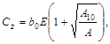
где b0 - коэффициент, м-1, принимаемый равным для песчаных грунтов 1, для супесей и суглинков 1,2, для глин и крупнообломочных грунтов 1,5;
Е - модуль деформации грунта под подошвой фундамента, кПа (тс/м2), определяемый в соответствии с требованиями СНиП 2.02.01-83;
А - площадь подошвы фундамента, м2.
Для фундаментов с площадью подошвы А, превышающей 200 м2, значение коэффициента Сz принимается как для фундаментов с площадью подошвы А = 200м2.
1.26. Коэффициенты упругого неравномерного сжатия Сj кН/м (тс/м3), упругого равномерного сдвига Сч кН/м (тс/м3), и упругого неравномерного сдвига Сy кН/м (тс/м3), принимаются равными:
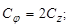
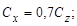
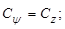
1.27. Коэффициенты жесткости для естественных оснований Kz, Kj, Kx, Ky определяются по формулам:
при упругом равномерном сжатии - Kz, кН/м (тс/м),
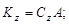
при упругом неравномерном сжатии (повороте подошвы фундамента относительно горизонтальной оси, проходящей через центр тяжести подошвы фундамента перпендикулярно плоскости колебаний) - Kj, кН·м (тс·м),
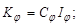
при упругом равномерном сдвиге - Kx, кН/м (тс/м),
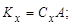
при упругом неравномерном сдвиге (повороте подошвы фундамента относительно вертикальной оси, проходящей через центр тяжести подошвы фундамента) - Ky, кН·м (тс·м),
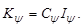
В формулах (9), (11):
Ij и Iy - соответственно момент инерции площади подошвы фундамента относительно горизонтальной оси, перпендикулярной плоскости колебаний, и вертикальной оси фундамента, проходящих через центр тяжести подошвы, м4.
1.28. Демпфирующие свойства основания должны учитываться относительным демпфированием x (доля критического затухания колебаний), определяемым, как правило, по результатам испытаний.
При отсутствии экспериментальных данных относительное демпфирование для вертикальных колебаний допускается xz определять по формулам:
для установившихся (гармонических) и случайных колебаний
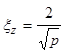 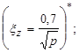
_____________
*Формулы в скобках соответствуют «технической» системе единиц.
для неустановившихся (импульсных) колебаний
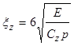 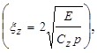
где р - то же, что в п. 1.21, кПа (тс/м2);
Е - то же, что в п. 1.25.
При расчете фундаментов допускается в качестве характеристики демпфирования использовать модуль затухания, ФZ, с, определяемый для гармонических и случайных колебаний по формуле
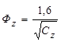 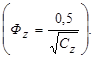
Для импульсных колебаний значение ФZ увеличивается в два раза.
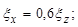 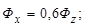
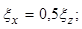 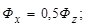
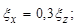 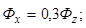
1.30. При групповой установке j однотипных машин на общем фундаменте значения амплитуд колебаний фундамента а следует определять при j = 2 как сумму амплитуд, при j > 2 - по формуле
, (18)
где k - коэффициент, принимаемый для машин периодического действия равным 1,5, для машин с импульсными нагрузками - 0,7, для машин со случайными динамическими нагрузками - 1;
ai - амплитуда колебаний фундамента при работе i-й машины;
j - число машин.
Расчетные значения амплитуд должны удовлетворять условию (1).
При групповой установке различного типа машин на общем фундаменте амплитуду колебаний фундамента следует определять как сумму амплитуд колебаний, вызываемых работой каждой из машин. При этом в условии (1) предельно допустимая амплитуда принимается на 30 % более значений, приведенных в табл. 2 для типа машины и частоты колебаний, соответствующих наибольшей составляющей расчетной амплитуды.
При установке машин с периодическими и случайными нагрузками на отдельно стоящих фундаментах амплитуду колебаний каждого фундамента следует определять с учетом колебаний, распространяющихся в грунте при работе машин, установленных на других фундаментах, в соответствии с указаниями обязательного приложения 4. При этом допустимую амплитуду колебаний фундамента-приемника au следует принимать на 30 % более значений предельно допустимых амплитуд, приведенных в табл. 2.
Для фундаментов машин с импульсными нагрузками, устанавливаемых на отдельных фундаментах, расчет амплитуд колебаний допускается производить без учета передачи колебаний по грунту.
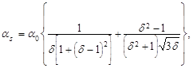
где as - амплитуда вертикальных (горизонтальных) колебаний грунта на поверхности в точке, расположенной на расстоянии r от оси фундамента, т.е. источника волн в грунте;
a0 - амплитуда свободных или вынужденных вертикальных (горизонтальных) колебаний фундамента, т.е. источника волн в грунте на уровне его подошвы, определяемая для различных видов машин по формулам обязательных приложений 1-3, в которых h1 следует заменить на минус h2;
d = r/r0;
здесь r - расстояние от оси фундамента-источника до точки на поверхности грунта, для которой определяется амплитуда колебаний;
r0 - приведенный радиус
подошвы фундамента-источника, 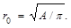
Частоту волн, распространяющихся в грунте, следует принимать равной частоте колебаний фундамента машины.
Примечание. В целях уточнения амплитуд колебаний, распространяющихся в грунте, допускается производить прогнозирование колебаний грунта на основе специальных экспериментальных исследований.
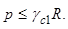
Условие (20) должно выполняться для фундаментов зданий и сооружений в пределах зоны, где скорость колебаний ns = asw на поверхности грунта от импульсных источников более 15 мм/с, от источников периодического действия и случайных более 2 мм/с (здесь as - амплитуда колебаний грунта, определяемая по формуле (19), w - угловая частота вынужденных колебаний фундамента-источника для машин с периодическими нагрузками или собственных - для машин с импульсными или случайными нагрузками).
ОСОБЕННОСТИ ПРОЕКТИРОВАНИЯ СВАЙНЫХ ФУНДАМЕНТОВ
1.33. Для фундаментов машин с периодическими нагрузками возможно применение свай любых видов; для фундаментов машин ударного действия следует применять железобетонные сваи сплошного сечения.
Расстояние между центрами свай в свайных фундаментах следует принимать в соответствии с указаниями СНиП 2.02.03-85, но не более 10d (где d - диаметр или меньший размер стороны поперечного сечения свай).
1.34. Расчет свайных фундаментов машин с динамическими нагрузками по несущей способности грунтов основания свай следует производить на действие расчетных статистических нагрузок в соответствии с требованиями СНиП 2.02.03-85.
При этом расчетные сопротивления грунтов основания на боковой поверхности свай и под их нижним концом должны быть дополнительно умножены на коэффициенты условий работы грунта основания соответственноgср,f и gср,R, приведенные в табл. 5, а их сумма для висячих свай - на коэффициент условий работы gсо, значения которого приведены в табл. 3. Для свай-стоек коэффициентgсо принимается равным 1.
Таблица 5
|
Коэффициенты условий работы грунтов основания |
||
|
на боковой поверхности сваи gср,f |
под нижним концом сваи gср,R |
|
|
а) Пески рыхлые любой крупности и влажности; мелкие и пылеватые водонасыщенные любой плотности; пылевато-глинистые грунты с показателем текучести IL > 0,6 |
0,6 (0,75) |
- |
|
б) Пески пылеватые, мелкие и средней крупности средней плотности любой влажности, кроме указанных в поз. «а»; пылевато-глинистые грунты с показателем текучести 0,25 £ IL £ 0,6 |
0,75 (0,85) |
0,75 (0,85) |
|
Другие виды грунтов |
1 (1) |
1 (1) |
|
Примечания: 1. В скобках указанны значения коэффициентов для свайных фундаментов с промежуточной подушкой. 2. При применении свай в просадочных грунтах значения коэффициентов gср,f и gср,R принимаются как для пылевато-глинистых грунтов с показателем текучести, равным значению, при котором в соответствии с указаниями СНиП 2.02.03-85 определяются расчетные сопротивления грунта под нижним торцом и на боковой поверхности сваи. |
||
В случае определения несущей способности свай по результатам полевых испытаний вместо коэффициентов gср,f и gср,R вводится коэффициент условий работы грунтов основания gср, определяемый как отношение несущей способности сваи, определенным расчетным способом с учетом коэффициентов gср,f и gср,R, к той же несущей способности без учета этих коэффициентов.
В случае опирания свай на грунты, указанные в поз. «а» табл. 5, несущую способность свай следует определять по результатам полевых испытаний длительно действующими динамическими нагрузками. При отсутствии таких данных при соответствующем обосновании допускается определять несущую способность свай по результатам полевых испытаний в соответствии с требованиями СНиП 2.02.03-85 с введением вместо коэффициентов gср,f и gср,R коэффициента gср = 0,25.
1.35. При устройстве свайных фундаментов зданий и сооружений, расположенных вблизи фундаментов машин с динамическими нагрузками, несущая способность свай определяется в соответствии с требованиями СНиП 2.02.03-85 с учетом дополнительного коэффициента условий работы грунтов основания gср (или gср,f и gср,R), значения которых определяются в соответствии с п. 1.34. Размеры зоны, для которой учитывается указанный коэффициент, следует принимать в соответствии с указаниями п. 1.32.
1.36. Расчет колебаний свайных фундаментов машин следует производить по тем же формулам, что и для фундаментов на естественном основании, но при введении вместо значений массы, моментов инерции массы и жесткостей m, qj, qjо, qy, Кz, Кх, Кj Кy соответствующих им приведенных значений mred, qj,red, qjо,red, qy,red, Кz,red, Кх,red, Кj,red Кy,red, определяемый по формулам (21)-(36).
Для вертикальных колебаний свайных фундаментов
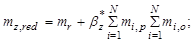
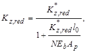
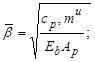 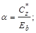
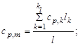 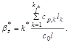
В формулах (21)-(23):
mr - общая масса ростверка с установленной на нем машиной, т(тс×с2/м);
тi,p - масса части i-й сваи, заглубленной в грунт, т(тс×с2/м);
mi,0 - масса части i-й сваи выше поверхности грунта, т(тс×с2/м);
N - число свай;
Eb - модуль упругости материала свай кПа (тс×/м2);
l - глубина погружения сваи в грунт, м;
lо - расстояние от подошвы ростверка до поверхности грунта, м; для низкого ростверка l = 0;
Ар - площади поперечного сечения сваи, м2;
и - периметр поперечного сечения сваи, м;
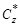
к* - коэффициент, принимаемый равным для свай: 2 - для сплошных железобетонных; 2,5 - для полых железобетонных; 3,5 - для деревянных;
ср,к - удельное упругое сопротивление грунта на боковой поверхности сваи в k-м слое принимаемое по табл. 6 и 7;
со - коэффициент, принимаемый равным 10000 кН/м3 (1000 тс/м3);
kl и kl* - номер слоя грунта, отсчитываемый от поверхности грунта до глубины, равной соответственно l и l* = 0,2 [1 + 4th(10/l)]l;
lk - толщина k-го слоя грунта;
th - тангенс гиперболический.
Примечание. При уменьшении расстояния между сваями от 5d до 2d значение Кz,red следует уменьшать в два раза (для промежуточных расстояний определять интерполяцией).
Таблица 6
|
Удельное сопротивление ср, кН/м3 (тс/м3) |
|
|
0,75 < IL £ 1 |
1,5×104 - 0,5×104(1500 - 500) |
|
0,5 < IL £ 0,75 |
3×104 - 1,5×104(3000 - 1500) |
|
0,25 < IL £ 0,5 |
4,5×104 - 3×104(4500 - 3000) |
|
0 < IL £ 0,25 |
6×104 - 4,5×104(6000 - 4500) |
|
Примечания: 1. Для промежуточных значений IL значение ср определяется интерполяцией. 2. Для просадочных грунтов значения удельного упругого сопротивления ср следует определять как для пылевато-глинистых грунтов с показателями текучести IL, соответствующим природной влажности или с учетом возможного замачивания в соответствии с требованиями СНиП 2.02.03-85. |
|
Для горизонтальных колебаний свайных фундаментов
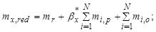
Таблица 7
|
Удельное упругое сопротивление ср,кН/м3(тс/м3),грунтов различной влажности |
|||
|
водонасыщенных |
влажных |
маловлажных |
|
|
Средней крупности: |
|||
|
рыхлые |
1,5×104(1500) |
2×104(2000) |
3×104(3000) |
|
средней плотности |
3×104(3000) |
4×104(4000) |
5×104(5000) |
|
Мелкие: |
|||
|
рыхлые |
1×104(1000) |
1,5×104(1500) |
2,5×104(2500) |
|
средней плотности |
2×104(2000) |
3×104(3000) |
4×104(4000) |
|
Пылеватые: |
|||
|
рыхлые |
0,5×104(500) |
1×104(1000) |
1,5×104(1500) |
|
средней плотности |
1×104(1000) |
1,5×104(1500) |
2,5×104(2500) |
|
Примечание. Удельное упругое сопротивление для плотных песчаных грунтов следует принимать на 50 % выше, чем наибольшее из значений ср указанных в табл. 7 для данного вида грунта. |
|||
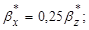
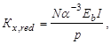
где I - момент инерции площади поперечного сечения сваи, м4;
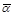
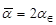
здесь 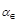
Для свай,защемленных в ростверк,
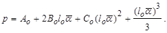
Для свай, защемленных в ростверк,
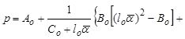
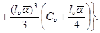
В формулах (28), (29):
Ao, Bo, Co - коэффициенты, зависящие от
приведенной глубины погружения сваи 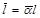
Для горизонтально-вращательных колебаний свай фундаментов
тj,red = тх,red; (30)
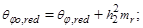
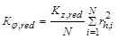
В формулах (31)-(33):
qj,r - момент инерции массы ростверка и машины относительно горизонтальной оси, проходящей через их общий центр тяжести перпендикулярно плоскости колебаний, т×м2(тс×м×с2);
h2 - расстояние от центра тяжести массы тr до подошвы ростверка, м;
rh,i - расстояние от оси i-й сваи до горизонтальной оси, проходящей через центр тяжести подошвы фундамента перпендикулярно плоскости колебаний.
Для вращательных колебаний свайного фундамента относительно вертикальной оси
тy,red = тх,red; (34)
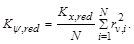
В формулах (35), (36):
qy,r - момент инерции массы ростверка и машины относительно вертикальной оси, проходящей через центр тяжести ростверка, т×м2(тс×м×с2);
rv,i - расстояние от оси i-й сваи до вертикальной оси, проходящей через центр тяжести ростверка, м.
1.37. Относительное демпфирование для свайных фундаментов следует определять, как правило, по результатам испытаний. При отсутствии экспериментальных данных относительное демпфирование xz при вертикальных колебаниях свайных фундаментов допускается принимать равным 0,2 для установившихся колебаний и 0,5 для неустановившихся колебаний. Значения xх , xj, xy определяются по формулам (15)-(17).
ОСОБЕННОСТИ ПРОЕКТИРОВАНИЯ ФУНДАМЕНТОВ МАШИН НА ВЕЧНОМЕРЗЛЫХ ГРУНТАХ
1.38. Фундаменты машин с динамическими нагрузками, возводимые на вечномерзлых грунтах, следует проектировать в соответствии с требованиями СНиП II-18-76 и дополнительными требованиями, изложенными в пп. 1.39-1.43.
Несущую способность оснований фундаментов машин на вечномерзлых грунтах, используемых в качестве оснований по принципу I, следует определять с учетом дополнительного коэффициента условий работы gсs, принимаемого по табл. 8.
Таблица 8
|
Коэффициент условий работы основания gсs из вечномерзлых грунтов, используемых по принципу I |
|
|
Менее 0,5 |
0,8 |
|
От 0,5 до 0,7 |
0,7 |
|
Св. 0,7 |
0,5 |
1.40. Среднее статистическое давление р под подошвой фундамента на естественном основании и несущую способность оснований свайных фундаментов машин с динамическими нагрузками на вечномерзлых грунтах, используемых по принципу II, следует определять согласно требованиям соответственно пп. 1.21. и 1.34.
1.41. Расчет вертикальных и горизонтальных колебаний массивных и стенчатых фундаментов и вертикальных колебаний рамных фундаментов на естественном основании, а также вертикальных колебаний свайных фундаментов для машин с вращающимися частями, с кривошипно-шатунными механизмами, дробильных и мельничных установок, возводимых на твердомерзлых грунтах, используемых по принципу I, производить не следует.
Расчет горизонтальных колебаний рамных фундаментов указанных типов машин в этих условиях следует производить в соответствии с указаниями обязательных приложений 1 и 3.
1.42. Расчет вертикальных колебаний фундаментов (в том числе свайных) машин с импульсными нагрузками в твердомерзлых грунтах, используемых по принципу I, а также фундаментов машин всех типов в пластичномерзлыхз грунтах следует производить как на немерзлых грунтах в соответствии с требованиями, изложенными в соответствующих разделах для разных типов машин; при этом коэффициенты жесткости оснований фундаментов следует определять по данным результатов полевых испытаний грунтов.
1.43. Расчет амплитуд горизонтальных колебаний свайных фундаментов машин с периодическими и случайными динамическими нагрузками, возводимых на твердомерзлых грунтах, используемых по принципу I, следует производить в соответствии с указаниями обязательных приложений 1 и 3. При этом коэффициенты жесткости конструкции фундамента Sх и Sy следует определять по формулам:
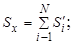
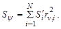
В формулах (37), (38):
Si - коэффициент жесткости i-й свай с жесткой заделкой в ростверк в горизонтальном направлении, кН/м (тс/м), Si = 12ЕbIi/l3d;
Ii - момент инерции площади поперечного сечения i-й сваи, м4;
ld - расчетная длина сваи, м, ld = lo + H + 3d;
H - величина, изменяющаяся в пределах 0 £ Н £ Но, принимаемая для наиболее неблагоприятного случая при расчете на колебания;
lo + Hо - соответственно расстояние от нижней грани плиты фундамента до поверхности грунта, м, и толщина сезонно оттаивающего слоя, м, определяемая в соответствии с указаниями СНиП II-18-76;
d - диаметр или сторона поперечного сечения сваи в направлении действия динамической нагрузки, м;
rv,i - расстояние от центра тяжести ростверка до оси i-й сваи, м.
1.44. Расчет колебаний фундаментов машин, возводимых на вечномерзлых грунтах, используемых по принципу II, следует выполнять как на немерзлых грунтах в соответствии с требованиями, изложенными в разделах для разных типов машин.
2. ФУНДАМЕНТЫ МАШИН С ВРАЩАЮЩИМИСЯ ЧАСТЯМИ
2.1. Требования настоящего раздела распространяются на проектирование фундаментов турбомашин (энергетических, нефте- и газоперекачивающих турбоагрегатов мощностью до 100 тыс. кВт, турбокомпрессоров, турбовоздуходувок, турбонасосов), электрических машин (мотор-генераторов и синхронных компенсаторов), центрифуг, центробежных насосов, дымососов, вентиляторов и тому подобных машин.
2.2. В состав исходных данных для проектирования фундаментов машин, указанных в п. 2.1, кроме материалов, перечисленных в п. 1.1, должны входить:
данные о значениях нагрузок от момента короткого замыкания генератора и от тяги вакуума в конденсаторе, координаты точек их приложения и размеры площадок передачи этих нагрузок; данные о нагрузках, возникающих при тепловых деформациях машин;
схемы расположения и нагрузки от вспомогательного оборудования (масло- и воздухоохладителей, масляных баков, насосов, турбопроводов и др.);
схемы площадок, опирающихся на фундамент, и данные о нормативных значениях нагрузок от них;
данные для определения монтажных нагрузок, размеры площадок передачи этих нагрузок.
Примечание. При проектировании фундаментов турбоагрегатов мощностью 25 тыс. кВт и более показатели физико-механических свойств грунтов должны определяться на основе непосредственных испытаний в полевых или лабораторных условиях.
2.3. Фундаменты машин с вращающимися частями следует проектировать рамными, стенчатыми, массивными или облегченными.
При выборе конструктивной схемы фундамента следует руководствоваться требованиями, содержащимися в пп. 1.11-1.13; при этом следует соблюдать симметрию фундамента относительно вертикальной плоскости, проходящей через ось вала машины.
Стенчатые фундаменты следует проектировать преимущественно с поперечными стенами, расположенными под подшипниками машины.
2.4. Центробежные насосы, агрегируемые на заводе-изготовителе при помощи железобетонных опорных плит с электродвигателями или двигателями внутреннего сгорания мощностью до 400 кВт, допускается устанавливать без фундамента на подстилающий слой пола. Для агрегатов с двигателями мощностью до 50 кВт железобетонные опорные плиты устанавливаются на подстилающий слой пола без специального закрепления на подливку из песчано-цементного раствора толщиной 30-50 мм. Для агрегатов с двигателями мощностью свыше 50 кВт крепление железобетонной опорной плиты к подстилающему слою пола должно осуществляться фундаментными болтами.
2.5. Фундаменты турбоагрегатов мощностью 25 тыс. кВт и более не допускается опирать на пески рыхлые любой крупности и влажности, мелкие и пылеватые водонасыщенные любой плотности, пылевато-глинистые грунты с показателем текучести IL > 0,6, а также на грунты с модулем деформации менее 10 МПа (100 кгс/см2) и грунты, подверженные в водонасыщенном состоянии суффозии. Для свай, опирающихся на указанные выше грунты, несущую способность следует определять по результатам полевых испытаний длительно действующими динамическими нагрузками.
2.6. На нижние плиты (или ростверки) рамных фундаментов машин, указанных в п. 2.1, допускается опирать стойки площадок обслуживания машин и перекрытия над подвалом.
В случае устройства под всем машинным залом общей фундаментной плиты допускается непосредственно на этой плите возводить фундаменты машин.
Элементы верхнего строения фундаментов не допускается связывать с элементами и конструкциями здания.
Примечание. В виде исключения на элементы верхнего строения фундаментов машин допускается опирать вкладные участки перекрытия. В этом случае под опорами балок перекрытия необходимо предусматривать изолирующую прокладку, например, из фторопласта или других подобных материалов. Такие прокладки следует предусматривать такие под опорами перекрытий и площадок обслуживания, установленных на стойках, опертых на нижние плиты (ростверка) фундаментов машин.
2.7. Нормативные динамические нагрузки (вертикальные Fn,v и горизонтальные Fn,h), кН (тс), от машин с вращающимися частями следует принимать по данным задания на проектирование, а при отсутствии этих данных допускается принимать равными:
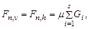
где m - коэффициент пропорциональности, устанавливаемый по табл. 9;
s - число роторов;
Gi - вес каждого ротора машины, кН (тс).
Таблица 9
|
Коэффициент пропорциональности m |
|
|
Турбомашины |
0,2 |
|
Электрические машины с частотой вращения nr, об/мин: |
|
|
менее 500 |
0,1 |
|
от 500 до 750 |
0,1-0,15 |
|
от 750 до 1500 |
0,15-0,2 |
|
свыше 1500 |
0,2 |
|
Центрифуги (d - диаметр ротора, м) |
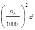 |
|
Центробежные насосы |
0,15 |
|
Дымососы и вентиляторы |
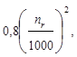 но не менее 0,2 |
2.8. Динамические нагрузки от машин, соответствующие максимальному динамическому воздействию машины на фундамент, следует принимать сосредоточенными и приложенными к элементам, поддерживающим подшипники (к ригелям, балкам) на уровне осей этих элементов.
2.9. Для фундаментов турбомашин расчетную динамическую нагрузку в продольном горизонтальном направлении следует принимать равной 0,5 значения той же нагрузки в поперечном горизонтальном направлении; для остальных машин с вращающимися частями продольную нагрузку следует принимать равной нулю.
2.10. Нормативные нагрузки на фундаменты турбомашин, соответствующие моменту короткого замыкания Мn,sc, кН×м (тс×м), и тяги вакуума в конденсаторе при гибком присоединении конденсатора Fn,vac, кН (тс), следует принимать по заданию на проектирование или определять по формулам:
В формулах (40), (41):
N - номинальная мощность электрической машины, кВт;
nr - частота вращения машины, кВт;
ksc - коэффициент кратности вращающего момента при коротком замыкании, принимаемый по заданию на проектирование; в случае отсутствия в задание на проектирование допускается принимать равным 10;
100 (10) - усилие тяги вакуума на 1 м2 сечения трубопровода, кН/м2 (тс/м2);
a - площадь поперечного сечения соединительной горловины конденсатора с турбиной, м2.
2.11. При определении расчетных значений усилий в элементах фундаментов машин с вращающимися частями в каждое отдельное сочетание следует включать только одну из нагрузок, соответствующих динамическому воздействию машины: вертикальную силу и момент в вертикальной плоскости или горизонтальную силу и соответствующие ей моменты в горизонтальной и вертикальной плоскостях.
Нагрузка от тяги вакуума в конденсаторе учитывается в сочетаниях нагрузок как длительная статическая с коэффициентом надежности по нагрузке gf = 1,2.
Сочетание в которое входит момент короткого замыкания Мsc, является особым.
2.12. Нормативную монтажную нагрузку на верхней плите фундамента следует принимать по заданию на проектирование, но не менее 10 кН/м2 (1 тс/м2); ее следует умножать на коэффициент надежности по нагрузке gf = 1,2 и коэффициент динамичности h = 1.
2.13. Расчет колебаний фундаментов всех видов машин с вращающимися частями сводится к определению максимальной амплитуды горизонтальных (поперечных) колебаний верхней плиты (для рамных фундаментов) или верхней грани фундамента (для массивных и стенчатых фундаментов); расчет следует производить в соответствии с указаниями обязательного приложения 1.
Расчет амплитуд вертикальных колебаний, как правило, не производится.
2.14. При расчетах колебаний значения расчетных динамических нагрузок следует определять в соответствии с требованиями пп. 1.23 и 2.7.
2.15. Для массивных и стенчатых фундаментов машин с вращающимися частями с частотой вращения более 1000 об/мин расчет колебаний допускается не производить
2.16. Расчет колебаний опорной плиты агрегируемого оборудования производится как для массивных фундаментов. При этом в массу фундамента следует включать массу оборудования, опорной плиты и массу подстилающего слоя пола непосредственно под плитой и в примыкающей зоне на расстоянии 0,5 м от граней плиты.
В случае необходимости ограничения распространения колебаний от оборудования, смонтированного на железобетонных опорных плитах, в подстилающем слое пола следует устраивать сквозной шов.
3. ФУНДАМЕНТЫ МАШИН С КРИВОШИПНО-ШАТУННЫМИ МЕХАНИЗМАМИ
3.1. Требования настоящего раздела распространяются на проектирование фундаментов машин с кривошипно-шатунными механизмами, имеющих неуравновешенные силы и моменты, в том числе дизелей, поршневых компрессоров, мотор-компрессоров, лесопильных рам, локомобилей и т.п.
3.2. В состав исходных данных для проектирования фундаментов машин, указанных в п. 3.1, кроме материалов, перечисленных в п. 1.1, должны входить:
значения равнодействующих неуравновешенных (возмущающих) сил и моментов первой и второй гармоник от всех частей, места приложения сил и плоскости действия моментов;
расстояние от оси главного вала машины до верхней грани фундамента.
3.3. Фундаменты машин с кривошипно-шатунными механизмами следует проектировать массивными или стенчатыми, а в отдельных случаях для машин с вертикально расположенными кривошипно-шатунными механизмами допускается также предусматривать устройство рамных фундаментов.
3.4. Компрессоры, агрегируемые на заводе-изготовителе при помощи железобетонных опорных плит с электродвигателями или двигателями внутреннего сгорания мощностью до 400 кВт, допускается устанавливать без фундаментов на подстилающий слой пола. Расчет колебаний и крепление железобетонной опорной плиты к подстилающему слою пола должны осуществляться с учетом требований пп. 2.4 и 2.16.
3.5. На фундаменты машин допускается свободно опирать отдельные площадки и стойки, а также вкладные участки перекрытий между смежными фундаментами, не соединенные с конструкциями зданий.
Примечание. Опирание элементов конструкций здания на фундаменты машин допускается в виде исключения при наличии специального обоснования.
3.6. Расчет прочности элементов конструкций фундаментов следует производить с учетом требований пп. 1.22 и 1.23, причем в формуле (3) следует принимать Fn - нормативную динамическую нагрузку, соответствующую наибольшей амплитуде первой или второй гармоники возмущающих нагрузок машины, устанавливаемой в задании на проектирование.
3.7. При определении амплитуд колебаний фундаментов горизонтальных машин расчет допускается ограничивать только вычислением амплитуды колебаний в направлении, параллельном скольжению поршней, и не учитывать влияние вертикальной составляющей возмущающих сил.
При расчете амплитуд колебаний фундаментов вертикальных машин допускается:
расчет амплитуд горизонтальных колебаний ограничить только для направления, перпендикулярного главному валу машины;
расчет амплитуд вертикальных колебаний производить только с учетом влияния вертикальной составляющей возмущающих сил.
Для фундаментов машин с угловым расположением цилиндров расчет амплитуд вынужденных колебаний следует производить с учетом как вертикальной, так и горизонтальной составляющей возмущающих сил и моментов машины для плоскости фундамента, перпендикулярной главному валу машины.
3.8. Расчет колебаний фундаментов машин с кривошипно-шатунными механизмами следует производить в соответствии с указаниями обязательного приложения 1, причем значения нормативных возмущающих сил первой или второй гармоники следует принимать по заданию на проектирование.
3.9. В случае, если из двух гармоник возмущающих сил и моментов одна составляет менее 20 % другой и ее частота отличается более чем на 25 % от собственной частоты колебаний фундамента, то при расчете амплитуд вынужденных колебаний ее не учитывают; в остальных случаях расчет амплитуд следует производить для каждой из первых двух гармоник возмущающих сил и моментов. При этом расчетные значения амплитуд колебаний фундамента для каждой гармоники не должны превышать предельно допустимых значений, приведенных в табл. 2.
3.10. Для второй гармоники возмущающих сил и моментов значения амплитуд горизонтальных и вертикальных колебаний аh,j и av следует определять по тем же формулам, что и для первой гармоники, заменив в формулах значение угловой частоты вращения машины w на 2w.
4. ФУНДАМЕНТЫ КУЗНЕЧНЫХ МОЛОТОВ
4.1. В состав исходных данных для проектирования фундаментов кузнечных молотов, кроме материалов, указанных в п. 1.1, должны входить:
чертежи габаритов молота с указанием типа молота (штамповочный, ковочный) и его марки;
номинальная и действительная (с учетом массы верхней половины штампа) масса падающих частей; высота их падения;
масса шабота и станины;
размеры подошвы шабота и отметки ее относительно пола цеха, а также размеры опорной плиты станины;
значение коэффициента восстановления скорости удара при штамповке изделий из цветных металлов или их сплавов;
внутренний диаметр цилиндра и рабочее давление пара или воздуха (или энергия удара).
4.3. Толщина подшаботной части фундамента должна быть не менее указанной в табл. 10.
Таблица 10
|
Толщина подшаботной части фундамента, м, не менее |
Число арматурных сеток в верхней части фундамента |
|
|
то £ 1 |
1 |
2 |
|
1 < то £2 |
1,25 |
3 |
|
2 < то £4 |
1,75 |
3 |
|
4 < то £6 |
2,25 |
4 |
|
6 < то £ 10 |
2,6 |
5 |
|
то > 10 |
Свыше 3 |
Свыше 5 |
4.4. Фундаментов кузнечных молотов должны иметь конструктивное армирование в соответствии с требованиями п. 1.15.
Верхнюю часть фундамента, примыкающую к подшаботной прокладке, следует армировать горизонтальными сетками с квадратными ячейками размерами 100´100 мм из стержней диаметром 10-12 мм; сетки следует располагать рядами с расстоянием между ними по вертикали 100-120 мм в количестве, принимаемом по табл. 10 и зависящем от массы падающей части молота то.
Часть фундаментов ковочных молотов, расположенную под подошвой станины молота, следует армировать горизонтальными сетками с квадратными ячейками из стержней диаметром 12-16 мм с шагом в продольном и поперечном направлениях 200-300 мм. Аналогичные арматурные сетки следует устанавливать у граней выемки для шабота всех видов кузнечных молотов, причем вертикальные стержни этих сеток необходимо доводить до подошвы фундамента.
4.5. Деревянные подшаботные прокладки следует изготавливать из дубовых брусьев; для молотов с массой падающих частей до 1 т подшаботную прокладку допускается изготовлять из лиственницы или сосны.
Деревянные прокладки следует предусматривать из пиломатериалов 1-го сорта по ГОСТ 2695-83 и ГОСТ 8488-86 Е.
При обосновании расчетом и по согласованию с заводом - изготовителем машины допускается заменять деревянные подшаботные прокладки на резинотканевые.
4.6. Амплитуды вертикальных колебаний фундаментов молотов при центральной установке аz, м, следует определять по формуле (1) обязательного приложения 2, в которой импульс вертикальной силы Jz, кН×с(тс×с), определяется по формуле
Jz = mon, (42)
где mo - масса падающих частей молота, т(тс×с2/м);
n - скорость падающих частей молота в начале удара, м/с, принимаемая по заданию на проектирование или, при отсутствии таких данных, определяемая по формулам:
для молотов, свободно падающих (фрикционных и одностороннего действия),
для молотов двойного действия
(44)
В формулах (43)-(45):
ho - рабочая высота падения ударяющих частей молота, м;
Ар - площадь поршня в цилиндре, м2;
рт - среднее давление пара или воздуха, кПа (тс/м2);
Еsh - энергия удара, кДж (тс×м);
g - ускорение свободного падения, g = 9,81м/с2.
Коэффициент восстановления скорости удара Î в формуле (1) обязательного приложения 2 следует принимать: при штамповке стальных изделий для молотов штамповочных Î = 0,5; для ковочных молотов Î = 0,25; при штамповке изделий из цветных металлов и их сплавов коэффициент Î следует принимать по заданию на проектирование.
4.7. Амплитуду вертикальных колебаний фундамента при установке молота с эксцентриситетом следует определять по формулам (2)-(4) обязательного приложения 2, в которых значение Î - то же, что в п. 4.6, а значение импульса момента Jj определяется по формуле
Jj = Jze, (46)
где Î - эксцентриситет удара, м.
При устройстве общей плиты под несколько молотов в соответствии с п. 4.2 и при нескольких отдельно стоящих фундаментах в цехе амплитуды вертикальных колебаний фундамента следует определять с учетом указаний п. 1.30.
4.8. Для уменьшения колебаний фундаментов молотов и вредного влияния их на обслуживающий персонал, технологические процессы, вблизи расположенное оборудование и конструкции зданий и сооружений следует, как правило, предусматривать виброизоляцию фундаментов молотов.
Применение виброизоляции является обязательным для фундаментов молотов с массой падающих частей 1 т и более, если основания фундаментов молотов и несущих строительных конструкций зданий кузнечного цеха сложены мелкими и пылеватыми водонасыщенными песками.
4.9. Сумма статического и динамического давлений на подшаботную прокладку не должна превышать расчетного сопротивления древесины при сжатии поперек волокон.
Расчетное динамическое давление на подшаботную прокладку s, кПа (тс/м2), вычисляется по формуле
(47)
где Еw - модуль упругости материала подшаботной прокладки, кПа (тс/м2);
- суммарная масса шабота и станины для штамповочных молотов и масса шабота для ковочных молотов, т (тс×с2/м);
А1 - опорная площадь шабота, м2;
t - толщина прокладки, м.
5. Фундаменты формовочных машин литейного производства
5.1. Требования настоящего раздела распространяются на проектирование фундаментов формовочных (встряхивающих) машин литейного производства с вертикально направленными ударными нагрузками.
5.2. В состав исходных данных для проектирования фундаментов формовочных машин литейного производства, кроме материалов, указанных в п. 1.1, должны входить:
нормативные статические нагрузки, передаваемые на фундамент основными механизмами (встряхивающим, поворотным, приемным и пр.), и точки приложения этих нагрузок;
грузоподъемность машин (суммарная масса опоки и формовочной смеси), масса падающих частей и станины встряхивающего механизма;
рабочая высота падения встряхивающих (падающих) частей машины;
размеры в плане, толщина и материал надфундаментной упругой прокладки.
5.3. Для устройства надфундаментной упругой прокладки следует предусматривать брусья из дуба и листовую резину. Для встряхивающих формовочных машин грузоподъемностью менее 5 т допускается применение брусьев из лиственницы или сосны.
Деревянные брусья следует изготовлять из древесины, отвечающей требованиям, указанным в п. 4.5.
5.4. Фундаменты формовочных машин литейного производства следует проектировать, как правило, железобетонными массивными.
Высота фундамента под встряхивающим механизмом и расстояние от дна каналов, тоннелей и выемок до подошвы фундамента должны быть не менее указанных в табл. 11.
Таблица 11
|
Высота фундамента под встряхивающим механизмом, м, не менее |
Расстояние от дна каналов, тоннелей и выемок до подошвы фундамента, м, не менее |
|
|
тс £ 1,5 |
1 |
0,2 |
|
1,5 < тс £ 2,5 |
1,25 |
0,3 |
|
2,5 < тс £ 5 |
1,5 |
0,4 |
|
5 < тс £ 10 |
1,8 |
0,5 |
|
10 < тс £ 20 |
2 |
0,7 |
|
тс > 20 |
2,25 |
0,9 |
5.5. Армирование фундаментов формовочных машин и их отдельных элементов необходимо производить в соответствии с требованиями, приведенными в п. 1.15, с учетом следующих указаний.
Верхнюю часть фундамента непосредственно под станиной встряхивающего механизма следует армировать горизонтальными сетками, число которых назначается в зависимости от грузоподъемности механизма, т:
до 5 1-2 сетки
от 5 до 15 2-3 сетки
св. 15 3-4 сетки
Наружные железобетонные стены, ограждающие формовочную машину, следует армировать двойными сетками, используя в качестве вертикальной арматуры стержни диаметром 12-14 мм грузоподъемности машин до 15 т и диаметром 16-20 мм при большей грузоподъемности. В качестве продольной арматуры следует предусматривать стержни диаметром 10-12 мм с шагом соответственно 300-400 мм. Сетки следует соединять между собой поперечными стержнями диаметром 10-12 мм через 600-800 мм в горизонтальном и вертикальном направлениях.
Наружные боковые грани фундамента следует армировать арматурными сетками, выполненными для фундаментов объемом 80 м3 и менее с вертикальными стержнями диаметром 12-14 мм и шагом 200 мм, а для фундаментов объемом более 80 м3 - диаметром 16-20 мм с тем же шагом.
5.6. Формовочные машины с поворотно-перекидным механизмом следует располагать на фундаменте, как правило, обращенными поворотно-перекидным механизмом в сторону строительных конструкций.
5.7. Амплитуды вертикальных колебаний фундаментов формовочных машин следует определять в зависимости от соотношения угловой частоты w, с-1, свободных вертикальных колебаний подвижных частей машины на упругой надфундаментной прокладке и угловой частоты l/z, с-1, свободных вертикальных колебаний всей установки на грунте, определяемых по формулам:
где k - суммарный коэффициент жесткости упругой надфундаментной прокладки, кН/м (тс/м), определяемый по формуле
здесь А1 - площадь станины встряхивающего механизма, м2;
Ew - модуль упругости деревянной прокладки, кПа (тс/м2);
Er - модуль упругости резиновой прокладки, принимаемый в зависимости от твердости по ГОСТ 263-75;
tr - толщина резиновой прокладки, м;
tw - толщина деревянной прокладки, м;
т\ - масса установки, т (тс×с2/м), определяемая по формуле
т/ = то + т1 + т; (50)
то - суммарная масса падающих частей машины, включая массу опоки и формовочной смеси, т (тс×с2/м);
т1 - масса станины встряхивающего механизма, т (тс×с2/м);
т - общая масса фундамента, неподвижных частей машины и грунта над обрезами фундамента, т (тс×с2/м).
При условии w > 0,7l/z амплитуды вертикальных колебаний аz и аv фундаментов формовочных машин следует определять по формулам (1)-(4) обязательного приложения 2, в которых Î - коэффициент восстановления скорости удара, принимаемый равным нулю; Jz - импульс вертикальной силы, кН×с(тс×с), определяемый по формуле (42); Jj - импульс момента сил относительно горизонтальной оси, кН×с×м (тс×с×м), определяемый по формуле (46); n - скорость падающих частей формовочной машины, м/с, определяемая по формуле (43), в которой ho - рабочая высота падения встряхивающих частей машины, м.
Вместо значений lz и т в формуле (1) обязательного приложения 2 следует принимать значения соответственно lz/ и т/, вычисленные по формулам (49) и (50), а вместо значений lj и qjо в формуле (4) обязательного приложения 2 - значения l/j и q/jо; значение l/j определяется по формуле
(51)
где q/jо - момент инерции массы всей установки, включая массу подвижных частей, относительно оси, проходящей через центр тяжести подошвы фундамента перпендикулярно плоскости колебаний, т×м2 (тс×м×с2).
При условии w £ 0,7l/z амплитуду вертикальных колебаний аv фундаментов формовочных машин следует определять по формуле (35) обязательного приложения 1, в которой az - амплитуда вертикальных колебаний общего центра тяжести фундамента и неподвижных частей машины, определяемая по формуле (36) обязательного приложения 1, в которой a\z - амплитуда вертикальной составляющей вращательных колебаний фундамента и неподвижных частей машины относительно горизонтальной оси, проходящей через их общий центр тяжести перпендикулярно плоскости колебаний. Для фундаментов машин с центральным приложением динамической нагрузки (встряхивающие столы и формовочные машины со штифтовым съемом) a\z = 0. В случае приложения динамической нагрузки с эксцентриситетом (формовочные машины с поворотно-перекидным механизмом) a\z определяется по формуле (38) обязательного приложения 1.
В формулах (36) и (38) обязательного приложения 1 динамическую нагрузку на фундамент формовочной машины Fv, кН(тс), следует вычислять по формуле
, (52)
а вместо угловой частоты вращения машины w следует принимать угловую частоту свободных вертикальных колебаний подвижных частей машины на упругой надфундаментной прокладке, определяемую по формуле (48).
Для уменьшения вращательных колебаний фундаментов формовочных машин с поворотно-перекидным механизмом эксцентриситет приложения динамической нагрузки следует ограничивать до 5-10 % размера стороны подошвы фундамента, в направлении которой происходит смещение точки приложения ударной нагрузки.
Эксцентриситет в расположении центра тяжести фундамента машины и центра тяжести подошвы фундамента может достигать 15 % размера стороны подошвы фундамента, в направлении которой происходит смещение центра тяжести фундамента в случае смещения центра тяжести подошвы в сторону приложения динамической нагрузки.
5.8. Расчетное значение амплитуды вертикальных колебаний фундаментов формовочных машин должно удовлетворять условию (1).
Амплитуду вертикальных колебаний фундаментов формовочных машин с поворотно-перекидным механизмом, определенную для торцовых граней фундамента, допускается увеличивать на 20 %.
5.9. При основании, сложенном мелкими или пылеватыми водонасыщенными песками, для машин грузоподъемностью 10 т и более следует, как правило, предусматривать виброизоляцию фундаментов.
6. ФУНДАМЕНТЫ ФОРМОВОЧНЫХ МАШИН ДЛЯ ПРОИЗВОДСТВА СБОРНОГО ЖЕЛЕЗОБЕТОНА
вибрационных площадок на упругих опорах;
виброударных площадок на упругих опорах;
ударных (кулачковых) площадок со свободным падением движущихся частей;
стационарных и скользящих виброштампов.
6.2. В состав исходных данных для проектирования фундаментов машин, указанных в п. 6.1, кроме материалов, перечисленных в п. 1.1, должны входить:
масса подвижных частей площадки;
схема расположения, тип и жесткость упругих опор;
число оборотов в минуту и амплитуда возмущающих сил вибратора, момент эксцентриков вибратора;
значение безынерционной пригрузки;
высота падения ударной части площадки;
расположение и размеры рабочих мест, если технологическим процессом производства не предусматривается дистанционное управление работой данной формовочной машины.
6.3. Фундаменты под формовочные машины для производства сборного железобетона следует проектировать массивными в виде плит или блоков. Фундаменты следует армировать в соответствии с требованиями п. 1.15.
6.4. Рабочее место на фундаменте должно быть защищено от вибраций в соответствии с требованиями ГОСТ 12.1.012-78.
6.5. При формовании изделий в высоких формах (например, кассетных) обслуживающие площадки вокруг форм (кассет) не допускается опирать на фундаменты формовочных машин и соединять с ними.
6.6. Фундаменты под вибрационные, виброударные и ударные площадки, а также под стационарные виброштампы следует проектировать таким образом, чтобы центр тяжести площади подошвы фундамента и центр жесткости упругих опор, а также линии действия равнодействующей возмущающих сил вибратора или ударов располагались, как правило, по одной вертикали.
Эксцентриситет равнодействующей возмущающих сил вибратора или линии действия ударов по отношению к центру тяжести площади подошвы фундамента не должен превышать: для вибрационных площадок и стационарных виброштампов 3 %, а для виброударных и ударных площадок 1 % размера стороны подошвы фундамента, в направлении которой смещается равнодействующая.
6.7. Амплитуды вертикальных колебаний av фундаментов под вибрационные площадки на упругих опорах следует определять по формулам (35)-(38) обязательного приложения 1, в которых динамическую нагрузку на фундамент Fv, кН(тс), следует вычислять по формуле
(53)
где Мехс - момент эксцентриков вибратора, кН×м(тс×м), принимаемый по заданию на проектирование;
то - масса подвижных частей площадки вместе с формуемым изделием, т(тс×с2/м), которая не учитывается при определении массы всей установки т (п. 5 обязательного приложения 1);
К - суммарный коэффициент жесткости опор, кН/м (тс/м), принимаемый по заданию на проектирование.
6.8. Для фундаментов виброударных и ударных площадок следует предусматривать, как правило, виброизоляцию.
Расчет амплитуд вертикальных колебаний аz невиброизолированных фундаментов следует производить по формуле (1) обязательного приложения 2, в которой Jz = mo v, коэффициент восстановления скорости удара принимают Î = 0,5; скорость удара v, м/с, следует вычислять для ударных площадок по формуле (43) (см. п. 4.6), а для виброударных - по формуле
(54)
где Fv - расчетное значение возмущающей силы вибратора, кН, (тс);
mо - масса подвижных частей, включая массу формы с бетоном, т (тс×с2/м);
w - угловая частота вращения, с-1.
6.9. Амплитуды вертикальных колебаний аv фундаментов виброштампов следует определять по формуле (35) обязательного приложения 1, в которой величины az и az, м, следует вычислять по формулам:
В формулах (55), (56):
Fv - расчетное значение вертикальной составляющей возмущающих сил машины, кН(тс);
е - эксцентриситет ее приложения, м, принимаемый для стационарных виброштампов равным нулю;
т - масса фундамента, засыпки грунта на его обрезах, неподвижных частей машины и формуемого изделия, т (тс×с2/м);
qj - момент инерции массы фундамента, засыпки грунта на его обрезах, неподвижных частей машины и формуемого изделия относительно оси, проходящей через общий центр тяжести перпендикулярно плоскости колебаний, т×м2 (тс×м×с2);
lj - угловая частота вращательных колебаний фундамента, с-1, определяемая по формуле (29) обязательного приложения 1, в которой qjо - момент инерции массы фундамента, засыпки грунта на его обрезах, неподвижных частей машины и формуемого изделия относительно оси, проходящей через центр тяжести подошвы фундамента перпендикулярно плоскости колебаний, т×м2(тс×м×с2);
w, lz, l - то же, что и в формулах обязательного приложения 1.
7. Фундаменты оборудования копровых бойных площадок
7.1. Требования настоящего раздела распространяются на проектирование фундаментов (оснований) копровых бойных площадок копровых цехов и скрапоразделочных баз.
7.2. В состав исходных данных для проектирования фундаментов оборудования копровых бойных площадок, кроме материалов, указанных в п.1.1, должны входить:
масса ударной части копра, т (тс с2/м), и высота ее падения, м;
размеры в плане площади, на которой производится разбивка (разделка) скрапа;
данные о расположении копра по отношению к существующим и проектируемым зданиям и сооружениям.
7.3. Конструкции бойных площадок следует назначать в зависимости от расчетного сопротивления грунтов основания Ro, определяемого по СНиП 2.02.01-83, и энергии ударной части копра.
7.4. В грунтах с расчетным сопротивлением Ro ³ 200 кПа (2кгс/см2) и при энергии ударной части копра до 300 кДж (30 тс×м) копровые бойные площадки следует устраивать в виде стальных плит (шабота), укладываемых по слою болванок или мартеновских козлов и мелкого скрапа толщиной не менее 1 м, заполняющих котлован глубиной не менее 2 м.
7.5. В грунтах с расчетным сопротивлением Ro < 200 кПа (2кгс/см2) и при энергии ударной части копра до 300 кДж (30 тс×м) под стальными плитами (шаботом) болванки или мартеновские козлы и мелкий скрап (согласно п. 7.4) следует укладывать по подстилающей песчаной подушке толщиной не менее 1 м, устроенной на железобетонной плите толщиной 1-1,5 м.
7.6. В грунтах с расчетным сопротивлением Ro ³ 200 кПа (2 кгс/см2) и при энергии ударной части копра более 300 кДж (30 тс×м) копровые бойные площадки следует устраивать в виде стальных плит (шаботов), укладываемых по слою болванок или мартеновских козлов и мелкого скрапа толщиной не менее 1,5 м и подстилающему слою песка толщиной не менее 1 м, ограждаемых железобетонным цилиндром или коробом.
7.7. В грунтах с расчетным сопротивлением, Ro < 200 кПа (2 кгс/см2) и при энергии ударной части копра более 300 кДж (30 тс×м) копровые бойные площадки следует устраивать в виде железобетонных корытообразных прямоугольных или круглых в плане конструкций (фундаментов), в которых размещаются стальные плиты (шаботы), уложенные на подшаботную прокладку, выполняемую, как правило, из трех слоев: нижнего защитного - в виде нескольких щитов из дубовых брусьев общей толщиной до 800 мм; среднего амортизирующего - в виде многослойной конструкции из чередующихся слоев чугунной стружки толщиной 80-100 мм и стальных листов толщиной не менее 20 мм; верхнего - из броневых плит толщиной 30-100 мм, на которых размещаются стальные блюмы.
7.8. Железобетонные конструкции фундаментов под оборудование копровых бойных площадок следует проектировать монолитными.
7.9. Шабот копровой бойной площадки должен устраиваться из стальных плит толщиной не менее 0,5 м; ориентировочную массу шабота тап, т (тс×с2/м), следует принимать не менее 0,5 тоhо, где то и hо - соответственно масса, т (тс×с2/м), и высоте падения, м, ударной части копра.
7.10. Боковые стенки железобетонных ограждений следует защищать по всей поверхности изнутри и поверху стальными плитами толщиной не менее 50 мм, прикрепленными к деревянным брусьям сечением не менее 150´150 мм.
Для уменьшения разлета осколков разбиваемого лома стенки железобетонных ограждений выше уровня шабота (на высоту не менее половины наибольшего размера в плане) следует устраивать наклонными внутрь на 7-10°.
7.11. Минимальные расстояния от копровых бойных устройств до фундаментов строительных конструкций зданий и сооружений следует принимать по табл. 12.
Таблица 12
|
Расстояние от копровых бойных устройств до фундаментов строительных конструкций, м (не менее), при массе ударной части копра то, т |
|||
|
то £ 3 |
3 < то < 7 |
то ³ 7 |
|
|
Скальные и полускальные |
15 |
20 |
30 |
|
Крупнообломочные, песчаные сухие пылевато-глинистые с показателем текучести IL < 0 (в том числе лессовидные) |
30 |
40 |
60 |
|
Песчаные влажные, пылевато-глинистые с показателем текучести 0 £ IL £ 1 |
40 |
60 |
80 |
|
Песчаные водонасыщенные, пылевато-глинистые с показателем текучести IL > 1 |
50 |
80 |
100 |
|
Примечание. При возведении копровых установок на водонасыщенных песчаных и текучей консистенции пылевато-глинистых грунтах следует искусственно укреплять основания фундаментов строительных конструкций (копровых цехов и скрапоразделочных баз), расположенных на расстояниях, меньших указанных в табл. 12. |
|||
8. ФУНДАМЕНТЫ ДРОБИЛОК
8.1. Требования настоящего раздела распространяются на проектирование фундаментов щековых, конусных (гирационных) и молотковых (ударных) дробилок.
8.2. В состав исходных данных для проектирования фундаментов дробилок, кроме материалов, указанных в п. 1.1, должны входить:
значения горизонтальной и вертикальной составляющих равнодействующей динамических нагрузок Fп и их места приложения соответственно относительно верхней грани фундамента дробилок и вертикальной оси, проходящей через центр тяжести дробильной установки;
частота вращения вала эксцентрика для конусных дробилок или главного вала для других видов дробилок;
масса вращающихся частей; число и масса молотков, расстояние от оси вращения до центра тяжести молотка для молотковых дробилок;
масса корпуса дробилок, масса заполнения.
8.3. Монолитные фундаменты дробилок следует проектировать преимущественно стенчатыми из двух стен (между которыми пропускается транспортер), нижней и верхней плиты (или двух верхних поперечных ригелей).
8.4. Сборно-монолитные фундаменты дробилок следует проектировать стенчатыми или рамными, предусматривая нижнюю плиту и верхние ригели из монолитного железобетона.
8.5. Групповые фундаменты под несколько дробилок следует предусматривать при расположении дробилок:
одноярусном - стенчатыми или рамными;
двух- или трехъярусном - стенчатыми.
При этом сборно-монолитные фундаменты следует проектировать, как правило, из блоков или стен, опирающихся на монолитную нижнюю плиту и связанных поверху монолитными обвязками.
8.6. Подошве отдельных фундаментов конусных дробилок следует придавать, как правило, квадратную форму, а фундаментам дробилок остальных видов - прямоугольную, вытянутую в направлении действия динамических нагрузок.
8.7. Расчет колебаний фундаментов дробилок сводится к определению наибольшей амплитуды горизонтальных колебаний верхней грани фундамента.
Расчет следует выполнять в соответствии с требованиями п. 1.20 и обязательного приложения 1.
8.8. Расчет колебаний фундаментов конусных дробилок, имеющих прямоугольную форму подошвы, следует производить в плоскости, совпадающей с направлением меньшего размера подошвы.
8.9. Рамные фундаменты дробилок следует рассчитывать по прочности на действие веса всех элементов установки с учетом веса заполнения и силы Fd, заменяющей динамическое действие машины, в соответствии с указаниями пп. 1.22 и 1.23.
Значение Fd следует определять по формуле (3), в которой нормативное значение динамической нагрузки Fп устанавливается по заданию на проектирование, а коэффициент надежности по нагрузке и коэффициент динамичности следует принимать по табл. 4.
Нормативное значение динамической нагрузки Fп, кН(тс), для молотковых дробилок при отсутствии данных завода-изготовителя допускается определять по формуле
Fп = тоеw2, (57)
где то - масса вращающихся частей дробилки, т (тс×с2/м);
е - эксцентриситет массы то, принимаемый равным 0,001 м;
w - угловая частота вращения массы то, с-1.
8.10. При расчете прочности фундаментов молотковых дробилок следует производить проверку на отрыв молотка, при этом нормативное значение динамической нагрузки следует определять по формуле (57), принимая в ней массу то равной массе одного молотка, а эксцентриситет е - расстоянию от оси вращения до центра тяжести молотка.
9. ФУНДАМЕНТЫ МЕЛЬНИЧНЫХ УСТАНОВОК
9.1. Требования настоящего раздела распространяются на проектирование фундаментов мельничных установок с коротким барабаном (стержневых, шаровых, рудно-галечных и др.) и трубчатых (при отношении длины барабана к диаметру более трех).
9.2. В состав исходных данных для проектирования фундаментов мельничных установок, кроме материалов, указанных в п. 1.1, должны входить:
моменты инерции масс барабана и ротора электродвигателя, крутильная жесткость вала и передаточное число зубчатой передачи;
расстояние от оси вращения барабанов мельничных установок до верхней грани фундамента;
полная масса корпуса мельничных установок, масса заполнения.
9.3. Фундаменты мельничных установок следует проектировать, как правило, монолитными или сборно-монолитными.
9.4. Фундаменты трубчатых мельниц следует проектировать, как правило, в виде ряда поперечных (по отношению к оси мельницы) П-образных рам, опирающихся на отдельные железобетонные плиты, а мельниц с коротким барабаном - в виде общих массивных плит с поперечными стенами или рамами для опирания частей машины.
Для уменьшения уровня вибраций следует объединять поверху рамные фундаменты под отдельные мельницы общей железобетонной плитой.
Примечания. 1. Допускается проектировать отдельные опоры трубчатых мельниц в виде поперечных стен на отдельных плитах.
2. При скальных и крупнообломочных грунтах допускается опирать стены, поддерживающие части мельниц с коротким барабаном, на отдельные плиты.
3. Установка двигателя, редуктора и одной из опор мельницы на разных фундаментах, не связанных жестко между собой, не допускается.
9.5. Расчет колебаний фундаментов мельничных установок следует производить на действие случайной динамической нагрузки, вызываемой движением заполнителя в барабане.
9.6. Амплитуды горизонтальных колебаний верхней грани массивных, стенчатых и рамных фундаментов мельничных установок от действия случайной динамической нагрузки следует определять по формулам обязательного приложения 3.
9.7. Собственная угловая частота колебаний фундаментов мельниц должна отличаться не менее чем на 25 % от собственной угловой частоты lsh крутильных колебаний вала электродвигателя, определяемой по формуле
(58)
где q1 - момент инерции массы барабана с загрузкой относительно его оси вращения т×м2 (тс×м×с2);
q2 - момент инерции массы ротора электродвигателя относительно его оси вращения, т×м2 (тс×м×с2);
К - крутильная жесткость вала, соединяющего ротор двигателя с приводной шестерней, кН×м/рад (тс×м/рад);
i - передаточное число зубчатой пары (шестерни и зубчатого венца барабана).
9.8. Расчет прочности элементов конструкций фундаментов мельниц надлежит производить с учетом действия следующих нагрузок:
расчетного значения веса элементов конструкций и частей мельницы с учетом веса заполнения;
горизонтальной составляющей расчетной динамической нагрузки Fd, кН(тс), приложенной к данной опоре и определяемой по формуле (3), в которой значения коэффициентов надежности по нагрузке и динамичности следует принимать в соответствии с табл. 4, а величину Fn - равной: для трубчатых мельниц 0,2Gm; для мельниц с коротким барабаном 0,1 Gm, где Gm - часть нормативного значения веса мельницы (без мелющих тел и заполнения), приходящаяся на данную опору, кН(тс).
10. ФУНДАМЕНТЫ ПРЕССОВ
10.1. Требования настоящего раздела распространяются на проектирование фундаментов винтовых, кривошипных и гидравлических прессов.
10.2. В состав исходных данных для проектирования фундаментов прессов, кроме материалов, указанных в п.1.1, должны входить:
габаритные чертежи пресса с указанием вида выполняемых им технологических операций (штамповка, ковка, вырубка);
масса поступательно движущихся рабочих частей пресса; момент инерции вращающихся рабочих масс винтового пресса относительно оси винта; главные моменты инерции пресса;
скорости поступательного и вращательного движения рабочих частей пресса в момент соприкосновения ползуна с упаковкой; полная деформация поковки в прессе штамповки или ковки, определяемая из графика рабочих нагрузок типовой поковки.
10.3. Фундаменты прессов следует проектировать, как правило, в виде жестких плит или монолитных блоков.
10.4. Фундаменты винтовых прессов, предназначенных для штамповки или ковки, следует рассчитывать с учетом импульса вертикальной силы и крутящегося момента относительно вертикальной оси следующим образом:
а) амплитуду вертикальных колебаний аz, м, фундамента следует определять по формуле (1) обязательного приложения 2, в которой значение коэффициента восстановления скорости удара Î следует принимать: при холодной штамповке и ковке Î = 0,5, при горячей штамповке и ковке Î = 0,25, а значение импульса вертикальной силы Jz, кН×с (тс×с), определяется по формуле
Jz = тоv, (59)
где то - масса поступательно движущихся рабочих частей пресса, т (тс×с2/м);
v - скорость поступательного движения рабочих частей пресса в момент удара, м/с;
б) амплитуды горизонтальных колебаний ah, y, м, фундамента следует определять по формулам (6) и (7) обязательного приложения 2; при этом значение Î то же, что в п.10.4 а, а импульс момента Jy принимается равным
Jy = qоzw, (60)
где qоz - момент инерции вращающихся рабочих масс пресса, т×м2 (тс м×с2), относительно оси винта;
w - угловая частота вращения винта в момент удара, с-1, принимаемая по заданию на проектирование.
10.5. Амплитуды вертикальных av, м, и горизонтальных ah,j, м, колебаний фундаментов кривошипных прессов при операциях штамповки следует определять по формулам (2)-(5) обязательного приложения 2, в которых значение коэффициента Î = 0; импульс вертикальной силы Jz определяется экспериментальным путем; при отсутствии опытных данных допускается импульс вертикальной силы определять по формуле (59), умножая его значение на коэффициент h, который учитывает влияние жесткости поковки и наличие люфтов в кинематических парах кривошипно-шатунного механизма; при 104 кН (103 тс) £ Fпот < 6,3×104 кН (6,3×103 тс) допускается принимать h = Fпот/6,3×104 (h = Fпот/6,3×103), а при Fпот > 6,3×104 (6,3×103 тс) коэффициент h следует принимать равным 1; импульс момента Jj принимается равным импульсу крутящего момента от замедления вращения рабочих частей пресса, возникающего при выполнении штамповки, и определяется экспериментальным путем; при отсутствии опытных данных значение Jj, кН×м×с (тс×м×с), допускается определять по формуле
(61)
где Fпот - номинальное усилие пресса, кН(тс);
d - полная деформация поковки в процессе штамповки, м, определяемая из типового графика рабочих нагрузок для рассматриваемой модели пресса (рабочий ход ползуна);
wо - угловая частота вращения кривошипа, с-1, принимаемая по заданию на проектирование.
При операциях вырубки амплитуду вертикальных колебаний фундамента az, м, следует определять по формуле (1) обязательного приложения 2, в которой коэффициент Î = 0, а значение импульса Jz следует определять экспериментальным путем; при отсутствии опытных данных допускается значение импульса Jz определять по формуле
(62)
где Fпот - номинальное усилие пресса, кН(тс), при операции вырубки;
w1 - угловая частота свободных колебаний станины, с-1, определяемая по формуле
(63)
где Кт - коэффициент вертикальной жесткости станины, кН/м (тс/м), принимаемый по заданию на проектирование;
mt - масса верхней части пресса, расположенной выше середины высоты станины, т (тс×с2/м).
10.6. Фундаменты гидравлических прессов, предназначенных для штамповки или ковки, следует рассчитывать на действие импульса вертикальной силы. При этом амплитуду вертикальных колебаний фундамента az следует определять по формуле (1) обязательного приложения 2, принимая в ней коэффициент Î = 0, а значение импульса Jz - по формуле (59), в которой v - максимальная скорость опускания подвижной траверсы, м/с.
11. ФУНДАМЕНТЫ ПРОКАТНОГО ОБОРУДОВАНИЯ
11.1. Требования настоящего раздела распространяются на проектирование фундаментов основного и вспомогательного оборудования прокатных и трубных цехов, а также оборудования непрерывного литья заготовок.
11.2. В состав исходных данных для проектирования фундаментов прокатного оборудования, кроме материалов, указанных в п.1.1, должны входить:
план основных осей оборудования с привязкой к осям здания, а также основные отметки оборудования; план и разрезы помещений технического подвала или этажа;
данные о расположении лотков для гидравлического смыва окалины и возможные входы в траншеи лотков, а также данные о расположении мест возможного появления производственных вод;
указания о расположении мест, где необходимо устройство лестниц, монтажных проемов, ограждений и перекрытий;
данные для определения значений монтажных нагрузок, располагаемых в пределах перекрытия подвала и возле него, в виде плана, на котором указываются следующие основные зоны действия нагрузок: от стационарного технологического оборудования, от временно размещаемого сменного оборудования при ремонтах с указанием веса, габаритов, числа монтажных единиц и минимальных проходов для наиболее тяжелого оборудования (сменные клети, валки с подушками и т.п.); данные для определения временных нагрузок от подвижного транспорта, содержащие характеристики и количество транспортных средств; данные для определения нагрузок в местах складирования металла (веса и размеры типовых вариантов штабелей, пирамид и т.п. с указанием проходов между ними); временную нагрузку от остального оборудования допускается задавать в виде сплошной равномерно распределенной нагрузки.
11.3. Под основное и вспомогательное прокатное оборудование следует проектировать массивные монолитные бетонные и железобетонные фундаменты с необходимыми вырезами, отверстиями и каналами или облегченные (рамного или стенчатого типа) монолитные или сборно-монолитные железобетонные фундаменты с использованием полостей и устройством в становых пролетах общих и местных технических этажей или подвалов; при этом установку рабочей и шестеренной клетей, редуктора и приводного двигателя следует предусматривать на общем фундаменте. Такие общие облегченные фундаменты следует устраивать из верхней и нижней плит, соединенных стойками и стенами или массивными устоями (опорами), отделенными швами от рабочей площадки и здания.
Оборудование мелкосортных, проволочных и штрипсовых станов допускается размещать в пролетной части верхней фундаментной плиты. Основное оборудование крупносортных и среднесортных станов следует размещать над несущими опорами (стойками или стенами). Рабочие и шестеренные клети листовых, толстолистовых, рельсобалочных и других тяжелых станов следует устанавливать на массивные устои.
11.4. В случае, если заложение всех участков фундаментов прокатного оборудования и оборудования непрерывного литья заготовок на одной отметке по глубине приводит к перерасходу материалов, допускается отдельные участки фундаментов закладывать на разной глубине.
Фундаменты, разделенные глубокими открытыми каналами (например, каналами для смыва окалины), следует связывать поверху железобетонными распорками через 3-6 м, расположение которых должно быть увязано с расположением оборудования.
11.5. Армирование фундаментов следует производить в соответствии с указаниями разд. 1. При этом верхнюю арматуру массивных фундаментов следует укладывать только под станинами оборудования с динамическими нагрузками.
Диаметры стержней нижней арматуры следует принимать не менее 16 мм для фундаментов длиной до 30 м и 20 мм - длиной свыше 30 м.
11.6. Под станинами оборудования, воспринимающими систематически действующие ударные нагрузки, следует предусматривать установку 2-3 сеток, располагаемых в соответствии с указаниями п.1.15. При этом верхние сетки, доходящие до края фундамента, следует загибать вниз вдоль вертикальной грани на длину 15 диаметров загибаемых стержней.
11.7. При наличии местных воздействий от лучистой теплоты, ударов кусками падающей окалины и т.п. вертикальные грани фундамента следует армировать сетками из стержней диаметром 12 мм с квадратными ячейками размером 200 мм.
11.8. Расчет колебаний массивных фундаментов под прокатное оборудование выполнять не требуется.
Расчет прочности элементов фундаментов выполняется в соответствии с указаниями пп.1.22 и 1.23. При этом нагрузки, возникающие при работе оборудования в исключительных случаях, например, при резком нарушении технологического процесса, и нагрузки, возникающие при авариях (поломка шпинделей, соединительных муфт и т.п.), относятся к временным особым нагрузкам.
12. ФУНДАМЕНТЫ МЕТАЛЛОРЕЖУЩИХ СТАНКОВ
12.1. В состав исходных данных для проектирования фундаментов металлорежущих станков, кроме материалов, указанных в п. 1.1, должны входить:
чертеж опорной поверхности станины станка с указанием опорных точек, рекомендуемых способов установки и крепления станка;
данные о значениях нагрузок на фундамент: для станков с массой до 10 т - общая масса станка, а для станков с массой более 10 т - схема расположения статических нагрузок, передаваемых на фундамент;
для станков, требующих ограничения упругого крена фундамента, - данные о предельно допустимых изменениях положения центра тяжести станка в результате установки тяжелых деталей и перемещения узлов станка (или максимальные значения масс деталей, массы подвижных узлов и координаты их перемещения), а также данные о предельно допустимых углах поворота фундамента относительно горизонтальной оси;
данные о классе станков по точности, а также о жесткости станины станков, о необходимости обеспечения жесткости за счет фундамента и о возможности частой перестановки станков;
для высокоточных станков - указания о необходимости и рекомендуемом способе их виброизоляции: кроме того, в особо ответственных случаях для таких станков (например, при установке высокоточных тяжелых станков или при установке высокоточных станков в зоне интенсивных колебаний оснований) в исходных данных для проектирования должны содержаться результаты измерений колебаний грунта в местах, предусмотренных для установки станков, и другие данные, необходимые для определения параметров виброизоляции (предельно допустимые амплитуды колебаний фундамента или предельно допустимые амплитуды колебаний элементов станка в зоне резания и т.п.).
12.2. Станки в зависимости от их массы, конструкции и класса точности допускается устанавливать на бетонном подстилающем слое пола цеха,на устроенные в полу утолщенные бетонные или железобетонные ленты (ленточные фундаменты) или на массивные фундаменты (одиночные или общие).
12.3. На подстилающем слое пола цеха следует устанавливать станки с массой до 10т (при соответствующем обосновании до 15т) нормальной и повышенной точности с жесткими и средней жесткости станинами, для которых l/h < 8 (где l - длина, м, h - высота сечения станины станка, м), а также высокоточные, виброизоляцию которых допускается осуществлять при помощи упругих опор, расположенных непосредственно под станиной станка.
На устраиваемые в полу цеха утолщенные бетонные или железобетонные ленты допускается устанавливать станки с массой до 30 т.
12.4. На фундаменты следует устанавливать станки следующих видов:
с нежесткими станинами с отношением l/h ³ 8 и с составными станинами, в которых требуемая жесткость обеспечивается за счет фундамента;
с массой более 10 т (или 15 т при соответствующем обосновании) при толщине бетонного подстилающего слоя пола, недостаточной для установки станков данной массы;
высокоточные, для виброизоляции которых необходима установка специальных фундаментов.
Примечание. Установка высокоточных станков на общие фундаменты допускается только в случаях, если в числе группы станков, устанавливаемых не один фундамент, отсутствуют такие, при работе которых будут возникать динамические нагрузки, вызывающие колебания с амплитудами, превышающими предельно допустимые, указанные в задании на проектирование.
12.5. Для высокоточных станков, устанавливаемых на виброизолированных фундаментах и требующих периодической юстировки, рекомендуется использовать комбинированные упруго-жесткие опорные элементы, позволяющие переходить от упругой установки фундамента, обеспечивающей его виброизоляцию, к жесткой.
При проектировании виброизолированных фундаментов станков на резиновых ковриках должны быть предусмотрены устройства, обеспечивающие возможность смены этих ковриков.
12.6. Для одиночных фундаментов станков нормальной и повышенной точности с массой до 30т высоту фундамента следует принимать в соответствии с данными, приведенными в табл. 13, а для станков с массой более 30 т - назначать из условия обеспечения необходимой жесткости станины за счет фундамента, а также из конструктивных соображений в (в частности, в зависимости от глубины приямков).
12.7. Высоту общих фундаментов станков нормальной и повышенной точности следует определять по результатам расчета фундамента по прочности и жесткости с учетом минимально необходимой высоты (см. табл. 13), обеспечивающей требуемую жесткость станины отдельных станков, а также из конструктивных соображений, особенностей данного вида станка и условий его обслуживания.
12.8. Фундаменты станков следует армировать сетками из стержней диаметром 8-10 мм с квадратными ячейками размером 300 мм, укладываемыми на расстоянии 20-30 мм от верхней и нижней граней фундамента.
12.9. Установку станков допускается производить как без крепления, так и с креплением фундаментными болтами. При этом крепление станков фундаментными болтами обязательно:
при необходимости обеспечения совместной работы станины с фундаментом (например, станков высокой точности, устанавливаемых на одиночные фундаменты, или станков с нежесткими станинами, в которых требуемая жесткость станины обеспечивается за счет фундамента);
при динамических нагрузках от возвратно-поступательно перемещающихся масс (например, в продольно-строгальных станках) или от вращающихся неуравновешенных масс, которые могут вызвать перемещения фундамента при работе на скоростных режимах (например, в токарных и фрезерных станках).
Таблица 13
|
Станки |
Высота фундамента h, м, под металлорежущие станки нормальной и повышенной точности с массой до 30 т |
|
|
1 |
Токарные Горизонтально-протяжные Продольно-фрезерные Продольно-строгальные |
|
|
2 |
Шлифовальные |
|
|
3 |
Зуборезные Карусельные, вертикальные полуавтоматы и автоматы Карусельно-фрезерные Консольно- и безконсольно-фрезерные Горизонтально-расточные |
|
|
4 |
Вертикально- и радиально-сверлильные |
0,6-1 м |
|
5 |
Поперечно-строгальные и долбежные |
0,8-1,4 м |
|
Обозначение: L - длина фундамента, м. |
||
|
Примечания: 1. Для групп 4 и 5 большие значения следует принимать для станков больших размеров. 2. Для агрегатных станков повышенной точности, многооперационных станков и станков с программным управлением (отдельных или в автоматических линиях) высоту фундаментов следует увеличивать на 20 %. |
||
12.10. При установке станков на утолщенных бетонных или железобетонных лентах пола или на отдельных фундаментах ленты и фундаменты следует рассчитывать на прочность на действие расчетных статических нагрузок в соответствии с указаниями пп.1.22 и 1.23 и в случае необходимости - на жесткость (см. п.12.6).
12.11. Расчет оснований фундаментов по деформациям следует производить в случаях ограничения углов поворота фундамента, при этом допускается пренебрегать упругостью фундамента. Расчет углов поворота фундамента следует выполнять на действие расчетных (с коэффициентом надежности по нагрузке gf = 1) статических, эксцентрично приложенных нагрузок.
12.12. Расчет колебаний невиброизолированных фундаментов станков, как правило, не выполняется.
12.13. Расстояние от фундаментов высокоточных станков до фундаментов станков, работающих со сознательными динамическими нагрузками (долбежные, строгальные и т.п.), должно быть не менее 15 м.
Допустимость установки высокоточных станков в зоне действия различного рода промышленных и транспортных источников вибраций следует проверять расчетом в соответствии с обязательным приложением 4.
13. ФУНДАМЕНТЫ ВРАЩАЮЩИХСЯ ПЕЧЕЙ
13.1. Требования настоящего раздела распространяются на проектирование фундаментов вращающихся обжиговых печей с числом опор более двух.
13.2. В состав исходных данных для проектирования, кроме материалов, указанных в п. 1.1, должны входить:
чертежи корпуса печи с указанием толщин стальной оболочки, размеров бандажей и толщины футеровки;
данные о числе зубьев венцовой шестерни; значения нагрузок на фундаменты от опорных рам и роликов, а также на опору приводного оборудования от механизмов привода;
частота вращения корпуса печи в эксплуатационном режиме;
значение максимального усилия в гидроупоре для печей, снабженных гидроупорами.
13.3. Фундамент вращающейся печи должен проектироваться, как правило, в виде отдельных железобетонных опор рамной или стенчатой конструкции, выполняемых монолитными или сборно-монолитными и отдельными от фундаментов и других конструкций здания. При этом приводное оборудование и ближайшую роликоопору необходимо размещать на одной опоре стенчатой конструкции со стенами в двух взаимно перпендикулярных направлениях.
13.4. Расчетной схемой установки (печи и фундамента) является неразрезная балка (корпус печи), шарнирно опирающаяся на упругие опоры. Упругость опор учитывается в вертикальном и горизонтальном направлениях.
Вертикальные и горизонтальные нагрузки на опоры, направленные перпендикулярно и вдоль оси печи, следует определять с учетом совместной работы корпуса печи и фундамента.
13.5. При проектировании опор коэффициенты их жесткости в горизонтальном направлении, перпендикулярном оси печи, следует принимать не менее коэффициентов жесткости корпуса печи, причем для крайних опор не менее коэффициентов жесткости корпуса печи в месте расположения соседних с ним опор.
Примечание. Под коэффициентом жесткости корпуса печи следует понимать реакцию неразрезной балки в месте расположения рассматриваемой опоры при ее горизонтальном единичном смещении поперек оси печи.
13.6. Нормативные горизонтальные нагрузки на опоры Fn,t, кН (тс), действующие вдоль оси печи, следует определять по формуле
где Fn,v - нормативная вертикальная нагрузка, кН (тс), определяемая по соответствующему сочетанию (п.13.9);
kf - коэффициент трения подбандажной обечайки по опорным роликам, принимаемый равным 0,2;
a - угол между вертикалью и прямой, соединяющей ось корпуса с осью опорного ролика.
13.7. Горизонтальные нагрузки на опоры, действующие вдоль оси печи, при обосновании расчетом допускается передавать на опору приводного оборудования стальными распорками, связывающими опоры на уровне их верха. При расчете распорок, кроме усилий, указанных в п. 13.6, следует учитывать усилия, возникающие в них от температурных воздействий.
13.8. Нормативные циклические нагрузки (вертикальная Fn,,v, и горизонтальная Fn,,h, действующая перпендикулярно оси печи) на опоры от веса печи, теплообменных устройств, футеровки и обжигаемого материала, монтажных и температурных деформаций корпуса печи, кН (тс), возникающие при вращении печи с эксцентриситетом, следует определять в соответствии с расчетной схемой, указанной в п. 13.4. При этом необходимо принимать максимальное значение реакции, получаемое на опоре при эксцентриситете оси корпуса печи, равном 20 мм, задаваемом поочередно на каждой опоре в вертикальном и горизонтальном направлениях. Максимальные расчетные нагрузки печи с числом опор не более четырех допускается определять при эксцентриситете оси корпуса печи, равном 10 мм.
Примечание. Нагрузки Fn,,v, и Fn,,h для трех- и четырехопорных печей допускается определять при эксцентриситете оси корпуса печи, равном 10 мм.
13.9. Расчет опор по прочности производится на следующие сочетания нагрузок: 1) Fv, Ft, 2) Fv,с, Ft,c, Fh, где Fv, Ft, Fh - расчетные нагрузки на рассматриваемую опору, кН(тс), определяемые в соответствии с указаниями пп. 13.6, 13.8 и 1.23; Fv,с - расчетная вертикальная нагрузка на опору, кН(тс), определяемая в соответствии с указаниями п. 13.4 без учета эксцентриситета печи; Ft,c - расчетная горизонтальная нагрузка на опору, кН (тс), действующая вдоль оси печи, определяемая в соответствии с указаниями п. 1.23 при замене нагрузки Fn,,v, в формуле (64) на нагрузку Fn,,v,с.
Примечания: 1. Для опор, оборудованных гидроупорами, в качестве расчетного значения горизонтальной нагрузки, направленной вдоль оси печи, Ft, кН (тс), следует принимать наибольшее из двух ее значений, определенных по формуле (64) и по усилию в гидроупоре.
2. Расчет опор на второе сочетание нагрузок следует производить с учетом момента, действующего в горизонтальной плоскости от нагрузки Ft, приложенной только к одному из роликов опоры печи.
13.10. Расчет железобетонных элементов опор на выносливость следует производить на нагрузки, определяемые в соответствии с указаниями п.13.9, принимая коэффициент надежности по нагрузке gf = 0,8.
13.11. Площадь подошвы опоры следует определять из условия допустимости ее отрыва от основания не более четверти ширины подошвы.
13.12. Фундаменты под печи следует проектировать таким образом, чтобы значения первой частоты собственных вертикальных и горизонтальных колебаний установки, определяемые для расчетной схемы п.13.4, отличались не менее чем на 25 % от значения частоты зацепления зубьев привода w, с-1, вычисленной по формуле
w = 0,105Nnr, (65)
где N - число зубьев венцовой шестерни;
nr - частота вращения печи, об/мин.
ПРИЛОЖЕНИЕ
1
Обязательное
РАСЧЕТ КОЛЕБАНИЙ ФУНДАМЕНТОВ МАШИН С ПЕРИОДИЧЕСКИМИ НАГРУЗКАМИ1
Рамные фундаменты
___________
1 К машинам с периодическими нагрузками относятся машины с вращающимися частями, кривошипно-шатунными механизмами, дробилки и др.
1. Амплитуды горизонтально-вращательных колебаний относительно вертикальной оси верхней плиты рамных фундаментов ah,y, м, следует определять по формуле
ah,y = aх + aylb, (1)
где aх - амплитуда горизонтальных колебаний центра тяжести верхней плиты, м, вычисляемая по формуле
(2)
ay - амплитуда (угол поворота), рад, вращательных колебаний верхней плиты относительно вертикальной оси, проходящей через ее центр тяжести, определяемая по формуле
; (3)
w - частота вращения машины, с-1, w = 0,105nr;
nr - частота вращения машины, об/мин;
ах,st, аy,st - соответственно перемещение, м, и угол поворота, рад, центра тяжести верхней плиты при статическом действии силы Fh и момента Mz, определяемые по формулам
(5)
здесь Fh - расчетное значение горизонтальной составляющей динамической нагрузки, кН(тс), определяемое по соответствующим разделам с учетом указаний п.1.23;
Mz - расчетное значение возмущающего момента относительно вертикальной оси, проходящей через центр тяжести верхней плиты, кН×м (тс×м), для машин с вращающимися частями следует принимать Mz = Fh lb/2;
Sx,Sy - коэффициенты жесткости системы фундамент - основание соответственно в горизонтальном направлении, перпендикулярном оси вала машины, кН/м (тс/м),и при повороте в горизонтальной плоскости, кН×м (тс×м), определяемые по формулам (6) и (7) настоящего приложения;
x/х, x/y - относительные демпфирования системы фундамент - основание, определяемые по формулам (12) и (13) настоящего приложения;
lх, ly - угловые частоты горизонтальных и вращательных колебаний фундамента относительно вертикальной оси, проходящей через центр тяжести верхней плиты, с-1, определяемые по формулам (14) и (15) настоящего приложения;
lb - расстояние от центра тяжести верхней плиты до оси наиболее удаленного подшипниками машины, м.
2. Коэффициенты жесткости конструкции фундамента с учетом упругости основания Sх, кН/м(тс/м), и Sy, кН×м(тс×м), следует вычислять по формулам:
В формулах (6) и (7):
h - высота фундамента, м;
Кх, Кy, Кj - коэффициенты жесткости основания соответственно при упругом равномерном Кх и неравномерном Кy сдвиге и неравномерном сжатии Кj, определяемые в соответствии с требованиями п.1.27 или п. 1.36;
Sox - сумма коэффициентов жесткости всех поперечных рам фундамента в горизонтальном направлении, перпендикулярном оси вала машины, кН/м (тс/м) (N - число поперечных рам), определяемая по формуле
(8)
Soy - сумма коэффициентов жесткости всех поперечных рам при повороте верхней плиты в горизонтальной плоскости относительно ее центра тяжести, кН×м (тс×м),определяемая по формуле
(9)
где еi - расстояние от плоскости i-й поперечной рамы до центра тяжести верхней плиты, м.
Коэффициент жесткости одноэтажных поперечных рам с жесткими узлами Si, кН/м (тс/м), следует определять по формуле
(10)
где Eb - модуль упругости материала рам верхнего строения, кПа (тс/м2);
(11)
Ih,i, Il,i - моменты инерции поперечных сечений соответственно стойки и ригеля рамы, м4.
hi, li - соответственно расчетная высота стойки и расчетный пролет ригеля i-й поперечной рамы, м.
Примечание. Допускается принимать расчетную высоту стойки hi равной расстоянию от верхней грани нижней плиты до оси ригеля (проходящей через центр тяжести площади его сечения), в расчетный пролет ригеля равным 0,9 расстояния между осями колонн.
3. Относительное демпфирование системы фундамент - основание x/х и x/y следует определять по формулам:
где xх, xj, - относительное демпфирование для горизонтальных xх и вращательных xj и xy колебаний фундамента на грунте, определяемое в соответствии с требованиями п. 1.29 или п. 1.37;
g - коэффициент поглощения энергии при колебаниях, принимаемый для железобетонных конструкций равным 0,06, для стальных конструкций - 0,02.
4. Угловые частоты колебаний фундамента lx и ly, с-1, следует определять по формулам:
В формулах (14), (15):
- масса системы, включающая массу всей машины, верхней плиты, продольных балок и поперечных ригелей рам, примыкающих к верхней плите, и 30 % массы всех колонн фундамента, т (тс×с2/м);
- момент инерции массы относительно вертикальной оси, проходящей через центр тяжести верхней плиты (горизонтальной рамы), т×м2 (тс×м×с2); величину допускается определять по формуле
= 0,1l2, (16)
где l - длина верхней плиты, м.
Массивные и стенчатые фундаменты
5. Амплитуды горизонтально-вращательных колебаний верхней грани массивных и стенчатых фундаментов относительно горизонтальной оси аh,j, м, следует определять по формуле
где (18)
(19)
здесь
(21)
(22)
S4 = 1 + x; (23)
(24)
; (25)
(26)
(27)
lx, lj - угловые частоты колебаний фундамента, с-1, соответственно горизонтальных и вращательных относительно горизонтальной оси, проходящей через центр тяжести подошвы фундамента перпендикулярно плоскости колебаний, определяемые по формулам:
(28)
(30)
Кх и Кj - коэффициенты жесткости основания, кН/м (тс/м) и кН×м (тс×м), определяемые согласно указаниям п. 1.27 или п. 1.36;
qjо - момент инерции массы всей установки относительно оси, проходящей через центр тяжести подошвы фундамента перпендикулярно плоскости колебаний, т×м2 (тс×м×с2), определяется по формуле
qjо=qj+ (31)
qj - момент инерции массы всей установки (фундамента с засыпкой грунта на его обрезах и выступах и машины) относительно оси, проходящей через общий центр тяжести перпендикулярно плоскости колебаний, т×м2 (тс×м×с2);
т - масса всей установки (фундамента с засыпкой грунта на его обрезах и выступах и машины), т(тс×с2/м);
Fh - расчетная горизонтальная составляющая возмущающих сил машины, кН (тс), определяемая по соответствующим разделам с учетом указаний п. 1.23;
М - расчетное значение возмущающего момента, кН×м (тс×м), равного сумме моментов от горизонтальных составляющих возмущающих сил при приведении их к оси, проходящей через центр тяжести установки перпендикулярно плоскости колебаний, и возмущающему моменту машины;
h1, h2 - расстояния от общего центра тяжести установки соответственно до верхней грани фундамента и до подошвы фундамента, м.
6. Главные собственные частоты колебаний установки l1,2, с-1, следует определять из соотношения
(32)
где (33)
7. Амплитуды горизонтальных ах, м, и вращательных аj, рад, колебаний массивный и стенчатых фундаментов следует определять по формуле (17) настоящего приложения, принимая S3 = S4 = 0 (при определении ах) и S1 = S2 = 0, h1 = 1 (при определении аj).
8. Амплитуды горизонтально-вращательных колебаний верхней грани фундамента аh,j, м, при действии только момента М (Fh = 0) следует определять по формуле
(34)
9. Амплитуды вертикальных колебаний массивных и стенчатых фундаментов аv, м, с учетом вращения относительно горизонтальной оси, перпендикулярной плоскости колебаний, следует определять по формуле
аv = аz + а/z, (35)
где
а/z - амплитуда вертикальной составляющей вращательных колебаний фундамента относительно горизонтальной оси, проходящей через центр тяжести установки перпендикулярно плоскости колебаний, определяемая при действии горизонтальных сил Fh и моментов М, включая моменты от вертикальных и горизонтальных сил, по формуле
а/z = аjIf, (37)
а при отсутствии горизонтальных сил (Fh = 0) по формуле
аj - амплитуда (угол поворота), рад, вращательных колебаний фундамента относительно горизонтальной оси, определяемая по указаниям п. 7 настоящего приложения;
Fv - расчетная вертикальная составляющая возмущающих сил машины, кН (тс), определяемая по соответствующим разделам с учетом указаний п. 1.23;
М - расчетное значение возмущающего момента, включающее моменты от вертикальных и горизонтальных сил, кН×м (тс×м);
Kz - коэффициенты жесткости основания, кН/м (тс/м), определяемый согласно указаниям п. 1.27 или п. 1.36;
lz - угловая частота собственных вертикальных колебаний фундамента, с-1, определяемая по формуле
(39)
xz - относительное демпфирование при вертикальных колебаниях фундамента, определяемое согласно указаниям п. 1.28 или п. 1.37;
lf - расстояние от вертикальной оси, проходящей через центр тяжести установки, до края верхней грани фундамента в направлении действия сил и моментов, м.
10. Амплитуды горизонтальных колебаний массивных и стенчатых фундаментов при вращении относительно вертикальной оси1 аh,y, м, следует определять по формуле
_____________
1 Формулы используются при расчете колебаний фундаментов оппозитных компрессоров.
аh,y, = аylmax, (40)
где lmax - расстояние от вертикальной оси, проходящей через центр тяжести установки, до наиболее удаленной точки фундамента, м;
аy - амплитуда (угол поворота), рад, вращательных колебаний фундамента относительно вертикальной оси, проходящей через центр тяжести установки, определяемая по формуле
(41)
здесь Мy - расчетное значение возмущающего момента, кН×м (тс×м), относительно вертикальной оси, проходящей через центр тяжести установки;
Кy - коэффициент жесткости основания при упругом неравномерном сдвиге, кН×м (тс×м), определяемый в соответствии с требованиями п. 1.27 или п. 1.36;
xy - относительное демпфирование для вращательных колебаний фундамента относительно вертикальной оси, определяемое в соответствии с требованиями п. 1.29 или 1.37;
ly - угловая частота вращательных колебаний фундамента относительно вертикальной оси, проходящей через центр тяжести установки, с-1, определяемая по формуле
(42)
где qy - момент инерции масс всей установки (фундамента с засыпкой грунта на его обрезах и выступах и машины) относительно вертикальной оси, проходящей через центр тяжести установки, т×м2 (тс×м×с2).
ПРИЛОЖЕНИЕ 2
Обязательное
РАСЧЕТ КОЛЕБАНИЙ ФУНДАМЕНТОВ МАШИН С ИМПУЛЬСНЫМИ НАГРУЗКАМИ1
__________
1 К машинам с импульсными нагрузками относятся кузнечные молоты, формовочные машины литейного производства, прессы и др.
1. Амплитуду вертикальных колебаний фундамента при центральной установке машины аz, м, следует определять по формуле
где Î - коэффициент восстановления скорости удара, значение которого следует принимать по указаниям соответствующих разделов;
Jz - импульс вертикальной силы, кН×с (тс×с), определяемый по указаниям соответствующих разделов;
т, lz - то же, что в формулах обязательного приложения 1.
2. Амплитуду вертикальных колебаний фундамента с учетом вращения относительно горизонтальной оси, перпендикулярной плоскости колебаний, аv, м, следует определять по формуле
av = az + a/z, (2)
в которой az определяется по формуле (1) настоящего приложения, а a/z - по формуле
a/z = аjlf, (3)
где lf - расстояние от вертикальной оси фундамента до края верхней грани в направлении действия импульса, м;
аj - амплитуда (угол поворота), рад, вращательных колебаний фундамента относительно горизонтальной оси, перпендикулярной плоскости колебаний, определяемая по формуле
здесь Jj - импульс момента сил относительно горизонтальной оси фундамента, перпендикулярной плоскости колебаний, кН×с×м (тс×с×м), определяемый по указаниям соответствующих разделов;
qjо lj - то же, что в п. 5 обязательного приложения 1.
3. Амплитуды горизонтальной составляющей горизонтально-вращательных колебаний фундамента аh,j, м, и вращательных аh,y, м, соответственно, относительно горизонтальной и вертикальной осей, проходящих через центр тяжести установки перпендикулярно плоскости колебаний, следует определять по формулам
аh,j = аjh; (5)
аh,y = аylmax, (6)
где h - расстояние от подошвы до верхней грани фундамента, м;
ay - амплитуда (угол поворота), рад, вращательных колебаний фундамента относительно вертикальной оси, определяемая по формуле
Jy - импульс момента относительно вертикальной оси, проходящей через центр тяжести установки, кН×с×м (тс×с×м), определяемый по указаниям соответствующих разделов;
ly, qy, lmax - то же, что в п. 10 обязательного приложения 1.
ПРИЛОЖЕНИЕ 3
Обязательное
РАСЧЕТ КОЛЕБАНИЙ ФУНДАМЕНТОВ МАШИН НА СЛУЧАЙНЫЕ ДИНАМИЧЕСКИЕ НАГРУЗКИ
1. Амплитуды горизонтальных колебаний верхней грани массивных и стенчатых фундаментов машин (например, мельниц) ah,j, м, рассчитываемых на случайные динамические нагрузки, следует определять по формуле
где Sq - спектральная плотность случайной нагрузки, кН2×с (тс2×с), определяемая по формуле
(3)
(4)
ho - расстояние от центра тяжести установки до оси вращения барабана мельницы, м;
т/ - масса загрузки барабана мельницы, т (тс×с2/м);
w - угловая частота вращения барабана, с-1;
d - диаметр барабана, м;
a - коэффициент, зависящий от типа машины (мельницы) и принимаемый:
для стержневых мельниц a = 0,015;
для остальных типов мельниц a = 0,001;
g - ускорение свободного падения, g = 9,81 м/с2.
Обозначения b, т, h1, h2, lх, l1 - те же,что и в формулах пп. 5, 6 обязательного приложения 1.
2. Амплитуды горизонтальных колебаний рамных фундаментов машин (например, мельниц) аh,y, м, рассчитываемых на случайные динамические нагрузки, следует определять по формуле
аh,y = ах + aylb, (5)
где lb - расстояние от центра тяжести верхней части фундамента до оси наиболее удаленного подшипника мельницы, м;
ах,ay - амплитуды соответственно горизонтальных колебаний верхней части фундамента, м, и вращательных колебаний относительно вертикальной оси, проходящей через центр тяжести верхней части фундамента, рад, определяемые по формулам
(6)
(7)
Sq - определяется по формуле (2) настоящего приложения;
е - расстояние в плане от центра тяжести верхней части фундамента до середины длины барабана м.
Обозначения Sx, Sy, lx, ly, x/x, x/y - те же, что и в формулах пп. 1-4 обязательного приложения 1.
ПРИЛОЖЕНИЕ
4
Обязательное
РАСЧЕТ КОЛЕБАНИЙ МАССИВНЫХ И СТЕНЧАТЫХ ФУНДАМЕНТОВ МАШИН ПРИ КИНЕМАТИЧЕСКОМ ВОЗБУЖДЕНИИ
1. Амплитуду горизонтально-вращательных колебаний верхней грани фундамента-приемника при кинематическом возбуждении от одного фундамента-источника следует определять по формуле
где
(2)
Значения S1(хк), S2(хк), S3(хк), S4(хк), для к = 1; 2 вычисляется по формулам (20) - (23) обязательного приложения 1 при значениях
(3)
Расчет следует выполнять для каждого из значений + х.
В формулах (1) - (4):
аs,x - амплитуда горизонтальных колебаний точек поверхности грунта в месте установки фундамента-приемника от горизонтальных колебаний фундамента источника, определяемая в соответствии с указаниями п. 1.31;
(5)
где а(1)s,z, а(2)s,z - амплитуды вертикальных колебаний поверхности грунта в точках, соответствующим крайним точкам стороны фундамента-приемника linf от вертикальных колебаний фундамента источника, определяемые в соответствии с указаниями п. 1.31;
linf - размер стороны подошвы фундамента-приемника, в направлении которой рассматриваются горизонтальные колебания;
w - угловая частота колебаний фундамента-источника.
Обозначения h1, h2, b, W1, W2, lj, lх - те же, что в формулах п.5 обязательного приложения 1.
2. Амплитуду вертикальных колебаний фундамента-приемника с учетом вращения при кинематическом возбуждении от одного фундамента-источника следует определять по формуле
где (7)
(8)
здесь (9)
lz, lf - обозначения те же, что в п. 9 обязательного приложения 1.
При расчете колебаний фундамента-приемника от кинематического возбуждения нескольких фундаментов-источников следует суммировать значения (или ), вычисляемые соответственно по формулам (1) или (6) для каждого источника колебаний.
ПРИЛОЖЕНИЕ 5
Справочное
ОСНОВНЫЕ БУКВЕННЫЕ ОБОЗНАЧЕНИЯ
Коэффициенты надежности и динамичности
gf - по нагрузке;
gо - условий работы, учитывающие характер динамических нагрузок и ответственность машин;
gс1 - условий работы грунтов основания;
gср - условий работы свайных фундаментов;
gcs - условий работы вечномерзлых грунтов;
h - динамичности;
m - пропорциональности (при определении динамических нагрузок).
Параметры колебаний
а - амплитуда колебаний фундамента;
аи - предельно допустимая амплитуда колебаний;
аs - амплитуда колебаний грунта;
аz, ах, - составляющие амплитуды колебаний, соответственно
аj, аy - вертикальная, горизонтальная, вращательная относительно горизонтальной и вертикальной осей;
w - угловая частота вынужденных колебаний;
пr - частота вращения, об/мин;
n - скорость падающих частей;
Î - коэффициент восстановления скорости удара;
g - ускорение свободного падения, g = 9,81 м/с2.
Характеристики системы фундамент-грунт
Cz, Cj, - коэффициенты упругого равномерного и неравномерного
Сх, Сy - сжатия и сдвига соответственно;
Кz, Кj - коэффициенты жесткости для естественных оснований
Кх, Кy - соответственно при упругом равномерном и неравномерном сжатии и сдвиге;
Кz,red, Kj,red, Kx,red, Ky,red - приведенные коэффициенты жесткости для свайных фундаментов соответственно при упругом равномерном и неравномерном сжатии и сдвиге;
lz, lx, lj, ly - угловые частоты соответственно при вертикальных, горизонтальных, вращательных относительно горизонтальной и вертикальной осей фундамента;
l1,2 - главные собственные частоты колебаний фундамента;
т - масса установки (фундамента с машиной и грунта на обрезах и выступах фундамента);
mred - приведенная масса свайного фундамента;
mr - масса ростверка с машиной;
то - масса падающих частей;
qj, qj,red - момент инерции массы установки соответственно на естественном основании и на свайном относительно оси, проходящей через центр тяжести установки перпендикулярно плоскости колебаний;
qjо, qjо,red - момент инерции массы установки соответственно на естественном основании и на свайном относительно оси, проходящей через центр тяжести подошвы фундамента перпендикулярно плоскости колебаний;
qy - момент инерции массы установки относительно вертикальной оси, проходящей через центр тяжести установки;
xz,xx,xj,xy - относительное демпфирование соответственно при вертикальных, горизонтальных и вращательных колебаниях относительно горизонтальной и вертикальной осей;
Ф - модуль затухания.
Характеристики материалов
R - расчетное сопротивление грунта основания;
Ro - табличное расчетное сопротивление грунта основания;
Е - модуль деформации грунта;
ср - удельное упругое сопротивление на боковой поверхности свай;
Еb - модуль упругости материала фундамента;
Еw, Еr - модуль упругости, соответственно, деревянной и резиновой прокладки.
Нагрузки
р - среднее статическое давление под подошвой фундамента;
Fn - нормативное значение динамической нагрузки;
Fd - расчетное значение динамической нагрузки;
М - расчетное значение возмущающего момента;
Мn,sc - нормативное значение момента короткого замыкания;
Gi - вес вращающихся частей;
G - вес установки;
Jz, Jj, Jy - импульс соответственно вертикальной силы и момента относительно горизонтальной и вертикальной осей;
Еsh - энергия удара;
Sq - спектральная плотность случайной нагрузки.
Геометрические характеристики
А - площадь подошвы фундамента;
Ij, Iy - моменты инерции подошвы фундамента, соответственно относительно горизонтальной оси, перпендикулярной плоскости колебаний, и вертикальной оси, проходящих через центр тяжести подошвы фундамента;
l - длина фундамента; глубина погружения сваи в грунт;
lo - свободная длина сваи;
d - диаметр или меньший размер стороны поперечного сечения сваи;
и - периметр поперечного сечения сваи;
h - высота фундамента;
h1, h2 - расстояния от общего центра тяжести установки соответственно до верхней грани фундамента и до подошвы фундамента;
r - расстояния между фундаментами, между сваями;
е - эксцентриситет приложения нагрузки.
СОДЕРЖАНИЕ